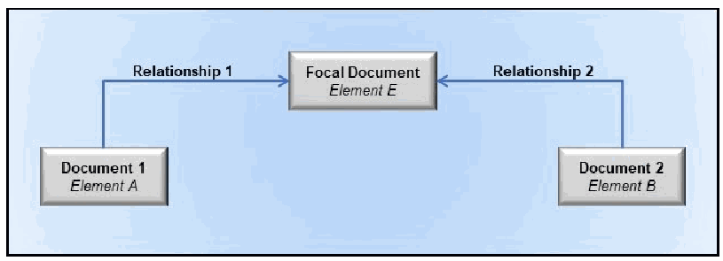
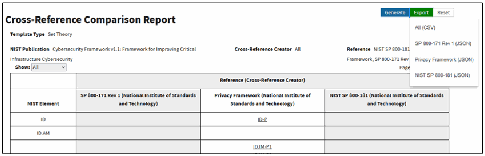

NIST IR 8278 Rev. 1 日本語訳
英語タイトル : National Online Informative References (OLIR) Program: Overview, Benefits, and Use日本語タイトル : National Online Informative References（OLIR）プログラム：概要、利点、および使用
公開日 : 2024-02-26
原文URL : https://csrc.nist.gov/pubs/ir/8278/r1/final
翻訳編集 : 自動生成（有志による非公式の日本語訳）, 原文取得日 : 2026-10-31, 訳文 : 282 / 283 ブロック
[要約] NIST IR 8278 Rev. 1 は、National Online Informative References（OLIR）プログラムの概要を示す報告書です。オンライン参考情報（OLIR）は、標準、ガイドライン、フレームワーク、規制といった文書内の概念間の関係を標準化された形で表現するもので、人間と自動化ツールの両方が利用できます。National OLIR プログラムは、主題の専門家による OLIR の定義を促進・支援し、OLIR を表示・比較するための一元的な場所を提供するための NIST の取り組みです。本報告書は、OLIR の基本とそれが提供できる利点を説明し、誰もが OLIR にアクセスして使用する方法を示します。
NIST Internal Report NIST IR 8278r1
NIST 内部報告書 NIST IR 8278r1
National Online Informative References (OLIR) Program
National Online Informative References（OLIR）プログラム
Overview, Benefits, and Use
概要、利点、および利用
Nicole Keller Stephen Quinn Karen Scarfone Matthew C. Smith Vincent Johnson
Nicole Keller Stephen Quinn Karen Scarfone Matthew C. Smith Vincent Johnson
This publication is available free of charge from: https://doi.org/10.6028/NIST.IR.8278r1
本刊行物は次の場所から無料で入手できます: https://doi.org/10.6028/NIST.IR.8278r1
NIST Internal Report NIST IR 8278r1
NIST 内部報告書 NIST IR 8278r1
National Online Informative References (OLIR) Program
National Online Informative References（OLIR）プログラム
Overview, Benefits, and Use
概要、利点、および利用
Nicole Keller Stephen Quinn Computer Security Division Information Technology Laboratory
Nicole Keller Stephen Quinn コンピュータセキュリティ部門 情報技術研究所
Matthew C. Smith Huntington Ingalls Industries
Matthew C. Smith Huntington Ingalls Industries
Karen Scarfone Scarfone Cybersecurity
Karen Scarfone Scarfone Cybersecurity
Vincent Johnson Electrosoft Services, Inc.
Vincent Johnson Electrosoft Services, Inc.
This publication is available free of charge from: https://doi.org/10.6028/NIST.IR.8278r1
本刊行物は次の場所から無料で入手できます: https://doi.org/10.6028/NIST.IR.8278r1
February 2024
2024年2月
［米国商務省の紋章。公的な標章のため、この非公式サイトには掲載していません。原本 PDF を参照してください。］
U.S. Department of Commerce Gina M. Raimondo, Secretary
米国商務省 Gina M. Raimondo 長官
National Institute of Standards and Technology
米国国立標準技術研究所
Laurie E. Locascio, NIST Director and Under Secretary of Commerce for Standards and Technology
Laurie E. Locascio、NIST 長官兼標準・技術担当商務次官
Certain equipment, instruments, software, or materials, commercial or non-commercial, are identified in this paper in order to specify the experimental procedure adequately. Such identification does not imply recommendation or endorsement of any product or service by NIST, nor does it imply that the materials or equipment identified are necessarily the best available for the purpose.
本書では、実験手順を十分に特定するために、商用・非商用を問わず、特定の機器、装置、ソフトウェア、または資材を挙げています。こうした記載は、NIST がいかなる製品やサービスも推奨または保証していることを意味せず、また、挙げられた資材や機器がその目的に最適であるとは限らないことを意味するものでもありません。
There may be references in this publication to other publications currently under development by NIST in accordance with its assigned statutory responsibilities. The information in this publication, including concepts and methodologies, may be used by federal agencies even before the completion of such companion publications. Thus, until each publication is completed, current requirements, guidelines, and procedures, where they exist, remain operative. For planning and transition purposes, federal agencies may wish to closely follow the development of these new publications by NIST.
本刊行物では、法令で定められた責務に従って NIST が現在策定中の他の刊行物に言及している場合があります。概念や方法論を含む本刊行物の情報は、そうした関連刊行物が完成する前であっても、連邦政府機関が利用してもよいです。したがって、各刊行物が完成するまでは、現行の要件、ガイドライン、および手順が存在する場合には、引き続き有効です。計画および移行のため、連邦機関は、NIST によるこれらの新しい刊行物の策定状況を注意深く追うことを検討してもよいです。
Organizations are encouraged to review all draft publications during public comment periods and provide feedback to NIST. Many NIST cybersecurity publications, other than the ones noted above, are available at https://csrc.nist.gov/publications.
組織には、すべてのドラフト刊行物についてパブリックコメント期間中に内容を確認し、NIST にフィードバックを提供することが奨励されています。上記以外にも、多くの NIST サイバーセキュリティ刊行物が https://csrc.nist.gov/publications で入手できます。
NIST Technical Series Policies
NIST テクニカルシリーズのポリシー
Copyright, Use, and Licensing Statements
著作権、使用、およびライセンスに関する声明
NIST Technical Series Publication Identifier Syntax
NIST テクニカルシリーズ刊行物識別子の構文
Publication History
刊行の経緯
Approved by the NIST Editorial Review Board on 2024-02-23
2024年2月23日に NIST 編集審査委員会が承認
Supersedes NIST IR 8278 (November 2020) https://doi.org/10.6028/NIST.IR.8278
NIST IR 8278（2020年11月）を置き換え https://doi.org/10.6028/NIST.IR.8278
How to Cite this NIST Technical Series Publication
本 NIST テクニカルシリーズ刊行物の引用方法
Keller N, Quinn S, Scarfone K, Smith M, Johnson V (2024) National Online Informative References (OLIR) Program: Overview, Benefits, and Use. (National Institute of Standards and Technology, Gaithersburg, MD), NIST Internal Report (IR) NIST IR 8278r1. https://doi.org/10.6028/NIST.IR.8278r1
Keller N, Quinn S, Scarfone K, Smith M, Johnson V (2024) National Online Informative References (OLIR) Program: Overview, Benefits, and Use. (National Institute of Standards and Technology, Gaithersburg, MD), NIST Internal Report (IR) NIST IR 8278r1. https://doi.org/10.6028/NIST.IR.8278r1
Author ORCID iDs
著者の ORCID iD
Nicole Keller: 0000-0003-4761-6817
Stephen Quinn: 0000-0003-1436-684X
Karen Scarfone: 0000-0001-6334-9486
Matthew C. Smith: 0000-0003-1004-7171
Vincent Johnson: 0000-0002-7363-996X
Nicole Keller: 0000-0003-4761-6817
Stephen Quinn: 0000-0003-1436-684X
Karen Scarfone: 0000-0001-6334-9486
Matthew C. Smith: 0000-0003-1004-7171
Vincent Johnson: 0000-0002-7363-996X
Contact Information
連絡先
olir@nist.gov
olir@nist.gov
National Institute of Standards and Technology
Attn: Applied Cybersecurity Division, Information Technology Laboratory
100 Bureau Drive (Mail Stop 2000) Gaithersburg, MD 20899-2000
米国国立標準技術研究所
宛先：応用サイバーセキュリティ部門、情報技術研究所
100 Bureau Drive (Mail Stop 2000) Gaithersburg, MD 20899-2000
Additional Information
追加情報
Additional information about this publication is available at https://csrc.nist.gov/pubs/ir/8278/r1/final, including related content, potential updates, and document history.
本刊行物に関する追加情報は https://csrc.nist.gov/pubs/ir/8278/r1/final で入手でき、関連コンテンツ、今後の更新の可能性、文書の履歴も掲載されています。
All comments are subject to release under the Freedom of Information Act (FOIA).
すべてのコメントは、情報自由法（FOIA）に基づき公開される場合があります。
Abstract
要旨
Information and communications technology (ICT) domains — such as cybersecurity, privacy, and Internet of Things (IoT) — have many requirements and recommendations made by national and international standards, guidelines, frameworks, and regulations. An Online Informative Reference (OLIR) provides a standardized expression of the relationships between concepts in such documents. OLIRs provide a consistent and authoritative way to specify these relationships that can be used by both humans and automated tools. The National OLIR Program is a NIST effort to encourage and facilitate the definition of OLIRs by subject matter experts and to provide a centralized location for displaying and comparing OLIRs. This report provides an overview of the National OLIR Program, explains the basics of OLIRs and the benefits they can provide, and shows how anyone can access and use OLIRs.
サイバーセキュリティ、プライバシー、モノのインターネット（IoT）などの情報通信技術（ICT）の領域には、国内および国際的な標準、ガイドライン、フレームワーク、規制によって定められた多くの要件と推奨事項があります。オンライン参考情報（Online Informative Reference: OLIR）は、そうした文書内の概念間の関係を標準化された形で表現します。OLIR は、これらの関係を一貫した権威ある方法で指定するもので、人間と自動化ツールの両方が利用できます。National OLIR プログラムは、主題の専門家による OLIR の定義を促進・支援し、OLIR を表示・比較するための一元的な場所を提供するための NIST の取り組みです。本報告書は、National OLIR プログラムの概要を示し、OLIR の基本とそれが提供できる利点を説明し、誰もが OLIR にアクセスして使用する方法を示します。
Keywords
キーワード
concept crosswalk; Informative Reference; National OLIR Program; Online Informative References (OLIRs); set theory relationship mapping; supportive relationship mapping.
概念クロスウォーク; 参考情報; National OLIR Program; オンライン参考情報（OLIR）; 集合論的関係マッピング; 支援的関係マッピング。
Reports on Computer Systems Technology
コンピュータシステム技術に関する報告書
The Information Technology Laboratory (ITL) at the National Institute of Standards and Technology (NIST) promotes the U.S. economy and public welfare by providing technical leadership for the Nation’s measurement and standards infrastructure. ITL develops tests, test methods, reference data, proof of concept implementations, and technical analyses to advance the development and productive use of information technology. ITL’s responsibilities include the development of management, administrative, technical, and physical standards and guidelines for the cost-effective security and privacy of other than national security-related information in federal information systems.
米国国立標準技術研究所（NIST）の情報技術研究所（ITL）は、国の測定・標準のインフラストラクチャに関する技術的リーダーシップを提供することで、米国の経済と公共の福祉を促進しています。ITL は、情報技術の発展と生産的な利用を進めるため、テスト、テスト方法、参照データ、概念実証の実装、技術分析を開発しています。ITL の責務には、連邦情報システムにおける、国家安全保障に関するもの以外の情報について、費用対効果の高いセキュリティとプライバシーのための、管理的、事務的、技術的、物理的な標準とガイドラインの開発が含まれます。
Audience
想定読者
People who might benefit most from this publication include cybersecurity subject matter experts, framework developers and consumers, cybersecurity professionals, auditors, and compliance specialists.
本刊行物から最も恩恵を受ける可能性のある人々には、サイバーセキュリティ分野の専門家、フレームワークの開発者と利用者、サイバーセキュリティ実務者、監査人、コンプライアンスの専門家が含まれます。
Acknowledgments
謝辞
Thanks to all of those who contributed to or commented on this document, particularly Murugiah Souppaya from NIST.
本文書に貢献した、またはコメントを寄せたすべての方々、特に NIST の Murugiah Souppaya に感謝します。
Trademark Information
商標情報
All registered trademarks and trademarks belong to their respective organizations.
すべての登録商標および商標は、それぞれの組織に帰属します。
Patent Disclosure Notice
特許開示に関する通知
NOTICE: ITL has requested that holders of patent claims whose use may be required for compliance with the guidance or requirements of this publication disclose such patent claims to ITL. However, holders of patents are not obligated to respond to ITL calls for patents and ITL has not undertaken a patent search in order to identify which, if any, patents may apply to this publication.
通知: ITL は、本刊行物のガイダンスまたは要件への準拠に使用が必要となる可能性のある特許請求の権利者に対し、そうした特許請求を ITL に開示するよう求めました。ただし、特許権者は ITL による特許の募集に応答する義務を負わず、ITL は、本刊行物に該当する特許があるとすればどれかを特定するための特許調査を行っていません。
As of the date of publication and following call(s) for the identification of patent claims whose use may be required for compliance with the guidance or requirements of this publication, no such patent claims have been identified to ITL.
本刊行物のガイダンスまたは要件への準拠に使用が必要となる可能性のある特許請求を特定するための募集を行った後、刊行日の時点で、そのような特許請求は ITL に特定されていません。
No representation is made or implied by ITL that licenses are not required to avoid patent infringement in the use of this publication.
ITL は、本刊行物の使用にあたって特許侵害を避けるためにライセンスが不要であると表明も示唆もしていません。
Table of Contents
目次
List of Tables
表の一覧
List of Figures
図の一覧
1. Introduction
1. はじめに
Information and communications technology (ICT) domains — such as cybersecurity, privacy, and the Internet of Things (IoT) — have many requirements and recommendations made by national and international standards, guidelines, frameworks, and regulations. Your organization determines which standard, guideline, framework, and regulation documents it must follow as well as what it chooses to follow. Each of these documents has a unique set of requirements and recommendations, and document creators typically organize and present their content in whatever prose format and structure they find suitable.
サイバーセキュリティ、プライバシー、モノのインターネット（IoT）などの情報通信技術（ICT）の領域には、国内および国際的な標準、ガイドライン、フレームワーク、規制によって定められた多くの要件と推奨事項があります。あなたの組織は、どの標準、ガイドライン、フレームワーク、規制の文書に従わなければならないか、また何に従うことを選択するかを決定します。これらの各文書にはそれぞれ固有の要件と推奨事項があり、文書の作成者は通常、自らが適切と考える文章形式と構造で内容を整理して提示します。
You and your colleagues need to identify all of the applicable requirements and recommendations across all of these documents and to make sense of them in aggregate. Here are some notional examples of understanding relationships between them:
あなたとあなたの同僚は、これらすべての文書にわたって適用される要件と推奨事項をすべて特定し、それらを総合的に理解する必要があります。それらの間の関係を理解する想定例を、いくつか示します。
•Implementing a new security control X would help satisfy particular requirements and recommendations from other documents.
•新しいセキュリティ管理策 X を実装すると、他の文書にある特定の要件と推奨事項を満たす助けになります。
•You need to update your remote access policy to include a requirement from document A that is more stringent than the requirements from other documents. That policy update should help satisfy the corresponding requirements from the other documents.
•リモートアクセスポリシーを更新して、他の文書の要件よりも厳格な、文書 A の要件を含める必要があります。そのポリシーの更新は、他の文書の対応する要件を満たす助けになるはずです。
•Your organization needs to comply with a new standard, so you need to determine which of its requirements you already meet, which you do not meet, and which potentially conflict with other requirements.
•あなたの組織は新しい標準に準拠する必要があるため、その要件のうち、すでに満たしているもの、満たしていないもの、他の要件と矛盾する可能性のあるものを判断する必要があります。
Knowing these things involves identifying the relationships among the requirements and recommendations from the documents. Making these determinations is usually time-consuming and prone to error, especially when you are not an expert on the documents.
これらを知るには、文書間の要件と推奨事項の関係を特定する必要があります。こうした判断は通常、時間がかかり、誤りが生じやすく、特にその文書の専門家でない場合はなおさらです。
Some documents include concept crosswalks, which provide basic information about which items in one document may relate to items in another document. For example, the NIST Cybersecurity Framework [1] adopted the term Informative References for its concept crosswalks; each Informative Reference indicates one or more parts of another document where readers can find additional information on the topic. Within the context of this document (and the National OLIR Program), a concept crosswalk indicates that a relationship exists between two items without any additional characterization of that relationship.
一部の文書には、ある文書の項目が別の文書の項目とどう関連するかについての基本的な情報を提供する、コンセプトクロスウォークが含まれています。たとえば、NIST サイバーセキュリティフレームワーク [1] は、コンセプトクロスウォークに対してInformative References（参考情報）という用語を採用しています。各 Informative Reference は、読者がそのトピックに関する追加情報を見つけられる、別の文書の1つ以上の箇所を示します。本書（および National OLIR プログラム）の文脈では、コンセプトクロスウォークは、2つの項目の間に関係が存在することを、その関係についての追加の特徴づけなしに示します。
In a general sense, a mapping indicates how items contained in one document relate to items contained in another document. However, within the context of the documents and the National OLIR Program, a set theory relationship mapping indicates the relationships between elements (items) from two documents by both qualifying the rationale for indicating the connection between elements (semantic, syntactic, or functional) and classifying the relationship utilizing set theory principles (subset of, intersects with, equal, superset of, not related to). Another form of mapping, a supportive relationship mapping, indicates how a supporting concept (an item) can or does help achieve a supported concept (another item). One of the following relationship types must be specified for each supportive relationship: supports, is supported by, identical, equivalent, or contrary.
一般的な意味では、マッピングは、ある文書に含まれる項目が別の文書に含まれる項目とどう関連するかを示します。ただし、これらの文書と National OLIR プログラムの文脈では、集合論に基づく関係マッピングは、2つの文書の要素（項目）間の関係を、要素間の接続を示す根拠を（意味的、構文的、または機能的に）限定し、集合論の原理を用いて関係を（部分集合（subset of）、交差（intersects with）、等しい（equal）、上位集合（superset of）、無関係（not related to））に分類することで示します。もう1つの形式のマッピングである支援関係マッピングは、支援する概念（ある項目）が、支援される概念（別の項目）の達成をどのように助けうるか、または助けているかを示します。各支援関係について、次のいずれかの関係タイプを指定しなければなりません: 支援する（supports）、支援される（is supported by）、同一（identical）、同等（equivalent）、または相反（contrary）。
An Online Informative Reference (OLIR) records the relationships between elements of two documents as a concept crosswalk (a concept crosswalk OLIR), a set theory relationship mapping (a set theory relationship mapping OLIR), or a supportive relationship mapping (a supportive relationship mapping OLIR) in accordance with the OLIR specification. OLIRs are consistent, authoritative, and standardized expressions of relationships that can be used by both humans and automated tools. Automated approaches are often necessary because of the ever-expanding pool of documents. Separating OLIRs from the documents themselves also facilitates updating the OLIRs as needed instead of having to wait until a document containing OLIRs is updated and re-released. Future NIST publications are likely to use OLIRs instead of documenting relationships in an ad hoc manner within the publications themselves.
オンライン参考情報（Online Informative Reference: OLIR）は、OLIR 仕様に従って、2つの文書の要素間の関係を、コンセプトクロスウォーク（コンセプトクロスウォーク OLIR）、集合論に基づく関係マッピング（集合論に基づく関係マッピング OLIR）、または支援関係マッピング（支援関係マッピング OLIR）として記録します。OLIR は、関係の一貫した、権威ある、標準化された表現であり、人間と自動化ツールの両方が利用できます。文書の数は増え続けているため、自動化された手法が必要になることが多くあります。OLIR を文書自体から分離することにより、OLIR を含む文書が更新・再公開されるのを待つのではなく、必要に応じて OLIR を更新しやすくなります。今後の NIST 刊行物は、刊行物自体の中でその場限りの方法で関係を文書化するのではなく、OLIR を使用すると考えられます。
Each OLIR is formatted according to a simple method defined by NIST Internal Report (IR) 8278A Revision 1, National Online Informative References (OLIR) Program: Submission Guidance for OLIR Developers [2], and is displayed in a centralized location — the OLIR Catalog. The OLIR Catalog is publicly accessible, so you can use it to access, view, and download OLIRs for various pairs of documents.
各 OLIR は、NIST 内部報告書（IR）8278A Revision 1、National Online Informative References (OLIR) Program: Submission Guidance for OLIR Developers [2] が定義する簡潔な方法に従って書式化され、一元的な場所である OLIR カタログに表示されます。OLIR カタログは一般に公開されているため、さまざまな文書の組合せに対する OLIR にアクセスし、閲覧し、ダウンロードするために使用できます。
1.1. Purpose and Scope
1.1. 目的と範囲
The purpose of this document is to introduce the National OLIR Program, highlight the benefits of OLIRs, and explain what OLIRs are and how to use the OLIR Catalog.
本書の目的は、National OLIR プログラムを紹介し、OLIR の利点を強調し、OLIR とは何か、OLIR カタログをどのように使用するかを説明することです。
After reading this document, any subject matter experts (SMEs) interested in creating content for the OLIR Catalog should also read NIST IR 8278A Revision 1 [2], which provides information on how to define OLIRs and submit them to the Program.
本書を読んだ後、OLIR カタログのコンテンツの作成に関心のある主題の専門家（SME）は、OLIR の定義方法とプログラムへの提出方法に関する情報を提供する NIST IR 8278A Revision 1 [2] も読むべきです。
1.2. Document Structure
1.2. 文書の構成
The remainder of this document is organized into the following sections:
本書の残りの部分は、次の節で構成されています。
•Section 2 provides an overview of OLIR and the OLIR Catalog.
•第2節では、OLIR と OLIR カタログの概要を示します。
•Section 3 describes common uses of the OLIR Catalog.
•第3節では、OLIR カタログの一般的な使用方法を説明します。
•The References section lists the references cited in this publication.
•参考文献の節には、本刊行物で引用した参考文献を挙げています。
•Appendix A contains a list of the acronyms used throughout this document.
•付録 A には、本書全体で使用している頭字語の一覧を載せています。
•Appendix B provides a glossary of terminology used throughout this document.
•付録 B には、本書全体で使用している用語の用語集を載せています。
•Appendix C offers a brief change log for this revision of the document.
•付録 C には、本書の今回の改訂に関する簡潔な変更履歴を載せています。
2. OLIR Overview
2. OLIR の概要
The National OLIR Program is a NIST effort to provide a single online location — the OLIR Catalog — for displaying and comparing OLIRs for ICT domain documents. The Program uses the terms OLIR, Informative Reference, and Reference interchangeably. The Program defines a simple format in NIST IR 8278Ar1 [2] for expressing OLIRs in a standardized and consistent manner.
National OLIR プログラムは、ICT 領域の文書に対する OLIR を表示・比較するための単一のオンライン上の場所である OLIR カタログを提供する、NIST の取り組みです。本プログラムでは、OLIR、Informative Reference（参考情報）、Reference（リファレンス）という用語を同じ意味で使用します。本プログラムは、OLIR を標準化され一貫した方法で表現するための簡潔な形式を、NIST IR 8278Ar1 [2] で定義しています。
As part of the Program, NIST experts are defining OLIRs for NIST documents, such as:
本プログラムの一環として、NIST の専門家は、次のような NIST 文書に対する OLIR を定義しています。
•The NIST Cybersecurity Framework (CSF) 2.0 [1]
•The NIST Cybersecurity Framework (CSF) 2.0 [1]
•Privacy Framework: A Tool for Improving Privacy through Enterprise Risk Management (Privacy Framework) version 1.0 [3]
•Privacy Framework: A Tool for Improving Privacy through Enterprise Risk Management（Privacy Framework）バージョン 1.0 [3]
•NIST IR 8259A, IoT Device Cybersecurity Capability Core Baseline [4]
•NIST IR 8259A, IoT Device Cybersecurity Capability Core Baseline [4]
•Special Publication (SP) 800-53 Revision 5, Security and Privacy Controls for Information Systems and Organizations [5]
•特別刊行物（SP）800-53 Revision 5, Security and Privacy Controls for Information Systems and Organizations [5]
The Program also shows third parties how to define OLIRs for a document that they created or for which they are an SME and a document that is already represented in the OLIR Catalog. Creators of OLIRs are known as OLIR Developers, or simply Developers. The National OLIR Program defines a formal process for Developers to submit OLIRs to NIST [2]. This process includes guidance for creating high-quality, more usable, better-documented OLIRs. It also defines a managed process for reviewing, updating, and maintaining OLIRs as the documents they are based on are revised and updated. NIST encourages document owners, software vendors, service providers, educators, and other parties to develop and submit OLIRs to the National OLIR Program.
本プログラムはまた、第三者に対して、自らが作成した文書または自らが SME である文書と、すでに OLIR カタログに掲載されている文書との間の OLIR を定義する方法も示します。OLIR の作成者はOLIR 開発者、または単に開発者と呼ばれます。National OLIR プログラムは、開発者が OLIR を NIST に提出するための正式なプロセスを定義しています [2]。このプロセスには、より高品質で、より使いやすく、より十分に文書化された OLIR を作成するためのガイダンスが含まれます。また、OLIR の基礎となる文書が改訂・更新されるのに合わせて、OLIR をレビュー、更新、維持するための管理されたプロセスも定義しています。NIST は、文書の所有者、ソフトウェアベンダー、サービスプロバイダー、教育者、その他の関係者が、OLIR を開発して National OLIR プログラムに提出することを奨励しています。
The National OLIR Program offers several benefits to anyone working with cybersecurity, privacy, or other ICT domain documents. Benefits include the following:
National OLIR プログラムは、サイバーセキュリティ、プライバシー、その他の ICT 領域の文書を扱うすべての人に、いくつかの利点を提供します。利点には次のものがあります。
•The OLIR Catalog is a single, easy-to-use repository where you can obtain information on many documents and analyze their relationships. OLIRs provide a much more cost-effective method for you and others to establish and verify the relationships among the documents you use.
•OLIR カタログは、多くの文書に関する情報を入手し、それらの関係を分析できる、単一の使いやすいリポジトリです。OLIR は、利用者や他の人々が、使用する文書間の関係を確立し検証するための、はるかに費用対効果の高い方法を提供します。
•Standardizing how relationships are expressed makes them more consistent, clear, usable, repeatable, and organizable, and it provides a way for automation technologies to ingest and utilize them.
•関係の表現方法を標準化することで、関係がより一貫し、明確で、使いやすく、再現可能で、整理しやすくなり、自動化技術がそれらを取り込んで活用する方法も提供されます。
•The National OLIR Program authenticates the source of each OLIR and allows you to identify who provided each OLIR.
•National OLIR プログラムは、各 OLIR の出所を認証し、各 OLIR を誰が提供したかを特定できるようにします。
•The National OLIR Program helps facilitate the integration of NIST guidance, which is produced in support of United States Government (USG) legislative and administrative responsibilities.
•National OLIR プログラムは、米国政府（USG）の立法上および行政上の責務を支援するために作成される NIST ガイダンスの統合を促進するのに役立ちます。
Note that although using OLIRs can significantly improve understanding of documents within organizations, it does not demonstrate or certify that an organization complies with a document. It can, however, assist in that process.
OLIR を使用することで組織内での文書の理解を大幅に改善できますが、それは、組織が文書に準拠していることを実証または認証するものではないことに注意してください。ただし、そのプロセスを支援することはできます。
2.1. Understanding Relationships
2.1. 関係の理解
Every OLIR compares elements of two documents and characterizes their relationship. The first document, called the Focal Document, is used as the basis for the comparison. All Focal Documents are NIST publications. The second document is called the Reference Document. Note that a Focal Document or a Reference Document is not necessarily in a traditional document format (e.g., a formal publication in a PDF) but could be a product, service, training, or other content. A Focal Document Element or a Reference Document Element is a discrete section, sentence, phrase, or other identifiable piece of content from a document.
すべての OLIR は、2つの文書の要素を比較し、それらの関係を特徴づけます。フォーカル文書（Focal Document）と呼ばれる1つ目の文書は、比較の基準として使用されます。フォーカル文書はすべて NIST 刊行物です。2つ目の文書は参照文書（Reference Document）と呼ばれます。フォーカル文書または参照文書は、必ずしも従来の文書形式（例: PDF の正式な刊行物）ではなく、製品、サービス、トレーニング、その他のコンテンツである場合もあることに注意してください。フォーカル文書要素（Focal Document Element）または参照文書要素（Reference Document Element）は、文書の個別の節、文、句、またはその他の識別可能なコンテンツの断片です。
A concept relationship style is an explicitly defined convention for characterizing relationships for a use case. NIST IR 8477, Mapping Relationships Between Documentary Standards, Regulations, Frameworks, and Guidelines [7] defines several concept relationship styles and provides more information on using them. The three concept relationship styles supported by OLIR are as follows:
概念関係スタイル（concept relationship style）は、ユースケースにおける関係を特徴づけるための、明示的に定義された規約です。NIST IR 8477、Mapping Relationships Between Documentary Standards, Regulations, Frameworks, and Guidelines [7] は、いくつかの概念関係スタイルを定義し、その使用に関する詳細な情報を提供しています。OLIR がサポートする3つの概念関係スタイルは次のとおりです。
•A concept crosswalk indicates that a relationship exists between a Focal Document Element and a Reference Document Element without any additional characterization of that relationship. Mappers may also choose to create a crosswalk for exploratory or preparatory purposes as the initial draft of a mapping that will eventually follow a more detailed relationship style. Section 4.1 of NIST IR 8477 provides additional information.
•コンセプトクロスウォーク（concept crosswalk）は、フォーカル文書要素と参照文書要素の間に関係が存在することを、その関係についての追加の特徴づけなしに示します。マッピング作成者は、最終的により詳細な関係スタイルに従うマッピングの最初のドラフトとして、探索的または準備的な目的でクロスウォークを作成することもできます。NIST IR 8477 の 4.1 節に追加情報があります。
•A set theory relationship mapping indicates the relationships between a Focal Document Element and a Reference Document Element by both qualifying the rationale for indicating the connection between elements (semantic, syntactic, or functional) and classifying the relationship utilizing set theory principles (subset of, intersects with, equal, superset of, not related to). Section 4.3 of NIST IR 8477 provides additional information.
•集合論に基づく関係マッピング（set theory relationship mapping）は、要素間の接続を示す根拠を（意味的、構文的、または機能的に）特定するとともに、集合論の原理を用いて関係を分類する（部分集合（subset of）、交差（intersects with）、等しい（equal）、上位集合（superset of）、無関係（not related to））ことで、フォーカル文書要素と参照文書要素の間の関係を示します。NIST IR 8477 の 4.3 節に追加情報があります。
•A supportive relationship mapping indicates how a supporting concept can or does help achieve a supported concept, with one of the concepts being a Focal Document Element and the other a Reference Document Element. One of the following relationship types must be specified for each relationship: supports, is supported by, identical, equivalent, or contrary. Relationship properties can also be specified for the “supports” and “is supported by” relationship types. Section 4.2 of NIST IR 8477 provides additional information.
•支援関係マッピング（supportive relationship mapping）は、支援する概念が、支援される概念の達成をどのように助けうるか、または助けているかを示します。一方の概念がフォーカル文書要素で、もう一方が参照文書要素です。各関係について、次のいずれかの関係タイプを指定しなければなりません: 支援する（supports）、支援される（is supported by）、同一（identical）、同等（equivalent）、または相反（contrary）。「支援する」と「支援される」の関係タイプについては、関係プロパティも指定できます。NIST IR 8477 の 4.2 節に追加情報があります。
2.2. Relationship Strength
2.2. 関係の強さ
The National OLIR Program provides a means for an OLIR Developer to subjectively quantify the strength of a relationship between elements. This metric can provide additional insight for the implied bond between elements asserted by the Developer. Figure 1 illustrates how a single relationship type can encompass relationships of different strengths. For example, Case 1 shows a Focal Document Element (f) and a Reference Document Element (r) in a Subset relationship with much in common, while Case 2 shows a Subset relationship where the two elements have relatively little in common. The other pairs of cases each depict different strengths of the same relationship type.
National OLIR プログラムは、OLIR 開発者が要素間の関係の強さを主観的に定量化する手段を提供します。この指標は、開発者が主張する要素間の暗黙の結びつきについて、追加の洞察を与えることができます。図 1 は、単一の関係タイプが、異なる強さの関係を包含できることを示しています。たとえば、ケース 1 は、フォーカル文書要素（f）と参照文書要素（r）が共通点の多い部分集合（Subset）の関係にある場合を示し、ケース 2 は、2つの要素の共通点が比較的少ない部分集合の関係を示しています。他のケースの組も、それぞれ同じ関係タイプの異なる強さを表しています。
![A grid of eight panels, each showing two overlapping or adjacent circles labeled f (Focal Document Element, gray) and r (Reference Document Element, orange) to illustrate relationship strength. Top row: Case 1, Subset of (a large f almost filling a slightly larger r); Case 3, Intersects with (f and r overlapping heavily); Case 5, Intersects with (a tiny f touching the edge of r); Case 7, Superset of (r nearly filling a slightly larger f). Bottom row: Case 2, Subset of (a tiny f inside a large r); Case 4, Intersects with (f and r overlapping only slightly); Case 6, Intersects with (a tiny r touching the edge of f); Case 8, Superset of (a tiny r inside a large f).](assets/ir-8278r1/p0012-figure-02.png)
関係の強さを示す 8 つの枠です。各枠には f（Focal Document Element、灰色）と r（Reference Document Element、橙色）の円が描かれています。上段は Case 1「Subset of」（大きな f が、わずかに大きい r をほぼ満たしています）、Case 3「Intersects with」（f と r が大きく重なっています）、Case 5「Intersects with」（小さな f が r の縁に接しています）、Case 7「Superset of」（r が、わずかに大きい f をほぼ満たしています）です。下段は Case 2「Subset of」（大きな r の中に小さな f があります）、Case 4「Intersects with」（f と r がわずかに重なっています）、Case 6「Intersects with」（小さな r が f の縁に接しています）、Case 8「Superset of」（大きな f の中に小さな r があります）です。
Fig. 1. Relative Strength of Relationships
図 1. 関係の相対的な強さ
The Program encourages OLIR Developers to include a characterization of the strength of comparable relationships but does not prescribe a methodology for doing so. Quantifying the strength of a relationship is optional, and its omission should not be interpreted as negative. It is intended for lateral comparisons, like the Cybersecurity Framework and the Privacy Framework, and not comparisons of documents at vastly different levels of abstraction, such as the Cybersecurity Framework and a research paper on a topic in quantum cryptography. The strength of non-lateral relationships is designated with “N/A.”
本プログラムは、OLIR 開発者が、比較可能な関係の強さの特徴づけを含めることを奨励していますが、そのための方法論は規定していません。関係の強さの定量化は任意であり、省略されていても否定的に解釈すべきではありません。これは、サイバーセキュリティフレームワークとプライバシーフレームワークのような水平的な比較を意図したものであり、サイバーセキュリティフレームワークと量子暗号のトピックに関する研究論文のような、抽象度が大きく異なる文書の比較を意図したものではありません。水平的でない関係の強さは、「N/A」で示されます。
2.3. Reference Data in the OLIR Catalog
2.3. OLIR カタログ内の参照データ
The OLIR Catalog contains information on two types of relationships between Focal Documents and Reference Documents: OLIRs and Derived Relationship Mappings. These relationships are organized as Reference Data via the OLIR Catalog.
OLIR カタログには、フォーカル文書と参照文書の間の2種類の関係、OLIR と導出関係マッピングに関する情報が含まれています。これらの関係は、OLIR カタログを通じて参照データ（Reference Data）として整理されます。
2.3.1. OLIRs
2.3.1. OLIR
OLIRs have been vetted by NIST to ensure compliance with the NIST IR 8278A specification, submitted for a public comment period, and finalized. The National OLIR Program has two major source types for OLIRs:
OLIR は、NIST IR 8278A 仕様への準拠を確保するために NIST によって審査され、パブリックコメント期間に提出され、確定されています。National OLIR プログラムには、OLIR の主要な出所タイプが2つあります。
1.Owner: These are produced by the owner of the Reference Document. For example, NIST is the owner of NIST SP 800-171 [6] and produced the OLIR for SP 800-171. Therefore, the designation of “owner” is granted to the SP 800-171 OLIR developed by NIST.
1.所有者（Owner）: これらは、参照文書の所有者によって作成されたものです。たとえば、NIST は NIST SP 800-171 [6] の所有者であり、SP 800-171 の OLIR を作成しました。したがって、NIST が開発した SP 800-171 の OLIR には、「所有者」の指定が与えられます。
2.Non-Owner: These are produced by an SME other than the Reference Document owner.
2.非所有者（Non-Owner）: これらは、参照文書の所有者以外の SME によって作成されたものです。
Each OLIR is also categorized as either unilateral or bilateral, depending on which individuals or organizations created or validated it:
各 OLIR は、どの個人または組織が作成または検証したかによって、片側（unilateral）または双方（bilateral）のいずれかにも分類されます。
•Unilateral: NIST is not the owner of the Reference Document. The OLIR was created by a third party, and NIST has not validated the assertions made by the OLIR’s Developer.
•片側（Unilateral）: NIST は参照文書の所有者ではありません。OLIR は第三者によって作成されており、NIST は OLIR の開発者が行った主張を検証していません。
•Bilateral: NIST is the owner of the Reference Document. Either NIST has developed the OLIR (owner-produced OLIR), or a third party has developed the OLIR (non-owner-produced OLIR) and NIST has validated its assertions and reached agreement with the developer.
•双方（Bilateral）: NIST が参照文書の所有者です。NIST が OLIR を開発した（所有者が作成した OLIR）か、第三者が OLIR を開発し（非所有者が作成した OLIR）、NIST がその主張を検証して開発者と合意に達したかのいずれかです。
When multiple OLIRs are available for a particular Focal Document/Reference Document pair, consider the following:
特定のフォーカル文書と参照文書の組に対して複数の OLIR が利用できる場合は、次の点を考慮してください。
•Generally, bilateral OLIRs should be favored over unilateral OLIRs.
•一般に、双方の OLIR は片側の OLIR より優先すべきです。
•Generally, owner-produced OLIRs should be favored over non-owner-produced OLIRs.
•一般に、所有者が作成した OLIR は、非所有者が作成した OLIR より優先すべきです。
•Generally, mapping OLIRs should be favored over crosswalk OLIRs.
•一般に、マッピングの OLIR は、クロスウォークの OLIR より優先すべきです。
If it is not clear which OLIR should be analyzed, focus on the quality and completeness of the OLIRs.
どの OLIR を分析すべきかが明確でない場合は、OLIR の品質と網羅性に着目してください。
2.3.2. Derived Relationship Mappings (DRMs)
2.3.2. 導出関係マッピング（DRM）
If OLIRs are not available for a particular Focal Document/Reference Document pair, you may be able to glean some of the mappings by using the OLIR Catalog’s Cross-Reference Comparison Report tool. Derived relationship mappings (DRMs) are the result of using the OLIRs between two Reference Documents and a single Focal Document to make inferences about relationships between the two Reference Documents. Every OLIR submission uses standard identifiers for the Focal Document Elements, and these standard identifiers make it possible to associate Reference Document Elements with each other through their relationships to a common Focal Document Element. DRMs are dynamically generated when you use the Cross-Reference Comparison Report tool to search the OLIR Catalog. The results of the search are displayed to you, as Section 3.2 shows.
特定のフォーカル文書と参照文書の組に対して OLIR が利用できない場合は、OLIR カタログのクロスリファレンス比較レポートツールを使用することで、マッピングの一部を見いだせる場合があります。導出関係マッピング（DRM）は、単一のフォーカル文書と2つの参照文書それぞれとの間にある OLIR を用いて、2つの参照文書間の関係を推論した結果です。すべての OLIR の提出は、フォーカル文書要素に標準の識別子を使用しており、この標準の識別子により、共通のフォーカル文書要素との関係を通じて、参照文書要素を互いに関連づけることが可能になります。DRM は、クロスリファレンス比較レポートツールを使用して OLIR カタログを検索するときに動的に生成されます。検索結果は、3.2 節に示すとおり、利用者に表示されます。
DRMs serve as the foundation for gap and comparative analysis. Figure 2 depicts how you could look for a relationship between Reference Document 1–Element A and Reference Document 2–Element B based on their individual relationships to Focal Document–Element E. DRMs do not indicate the relationships between the Reference Documents. Therefore, in reference to Fig. 2, if an organization implements Document 1–Element A, that does not necessarily mean it is also implementing Document 2–Element B. The two elements are potentially related. Even when the relationship is “equal,” that does not mean the two elements are identical and does not imply that implementing one element means compliance with the other element.
DRM は、ギャップ分析と比較分析の基盤として機能します。図 2 は、参照文書 1 の要素 A と参照文書 2 の要素 B の間の関係を、それぞれのフォーカル文書の要素 E との個別の関係に基づいて、どのように探すことができるかを示しています。DRM は、参照文書間の関係を示すものではありません。したがって、図 2 に関して、組織が文書 1 の要素 A を実装しているからといって、必ずしも文書 2 の要素 B も実装しているとは限りません。2つの要素は潜在的に関連しているにすぎません。関係が「等しい（equal）」であっても、2つの要素が同一であることを意味せず、一方の要素を実装することが他方の要素への準拠を意味するものでもありません。

中央に「Focal Document, Element E」の箱があります。左の「Document 1, Element A」の箱から「Relationship 1」の矢印が、右の「Document 2, Element B」の箱から「Relationship 2」の矢印が、それぞれ中央の箱に向かっています。
Fig. 2. Multiple Documents Related to a Focal Document
図 2. フォーカル文書に関連する複数の文書
Another caveat regarding DRMs is that the elements being compared are often at different levels of detail (sometimes referred to as “different levels of abstraction”). For example, suppose you want to compare CSF Core Element PR.AC-01, “Identities and credentials for authorized users, services, and hardware are managed by the organization” [1], to NIST SP 800-53 Element IA-7, “Cryptographic Module Authentication,” which is defined as “The information system implements mechanisms for authentication to a cryptographic module that meet the requirements of applicable federal laws, Executive Orders, directives, policies, regulations, standards, and guidance for such authentication” [5]. PR.AC-01 is at a higher level than IA-7, which specifies, in detail, one part of what PR.AC-01 encompasses. For some DRMs, the difference in the level of detail of the elements being compared may be vast.
DRM に関するもう1つの注意点は、比較される要素が多くの場合、詳細度の異なるレベル（「抽象度の異なるレベル」と呼ばれることもあります）にあることです。たとえば、CSF Core Element PR.AC-01, “Identities and credentials for authorized users, services, and hardware are managed by the organization” [1] を、NIST SP 800-53 Element IA-7, “Cryptographic Module Authentication,” と比較したいとします。IA-7 は “The information system implements mechanisms for authentication to a cryptographic module that meet the requirements of applicable federal laws, Executive Orders, directives, policies, regulations, standards, and guidance for such authentication” [5] と定義されています。PR.AC-01 は IA-7 より上位のレベルにあり、IA-7 は PR.AC-01 が包含するものの一部を詳細に規定しています。一部の DRM では、比較される要素の詳細度の違いが非常に大きい場合があります。
Before the National OLIR Program, analyzing documents often meant you would have to conduct a manual comparison, perhaps by copying the contents of both documents into a spreadsheet for easier searching and sorting. You would then likely resort to using section headers as a starting point for the comparison because of a lack of consistent identifiers within the documents. For example, if you were comparing the Cybersecurity Framework with NIST SP 800-171 [6], you could review the “Asset Management (ID.AM) Category” of the Cybersecurity Framework Reference Document, then proceed to SP 800-171 and find a section where an element similar to the Cybersecurity Framework element might be documented. For this example, you might select Section 3.4, “Configuration Management,” of SP 800-171 and read each of its basic and derived security requirements to identify relationships. You would repeat this laborious and error-prone process for all of the Categories and Subcategories within the Cybersecurity Framework and all of the basic and derived requirements of SP 800-171. Multiply this process by other people also finding the relationships, and two problems quickly emerge: 1) the different opinions of people result in inconsistent associations, and 2) an enormous amount of effort is duplicated. Streamlining this process is the main reason the OLIR DRM capability was created.
National OLIR プログラム以前は、文書の分析には、検索や並べ替えを容易にするために両方の文書の内容をスプレッドシートにコピーするなどして、手作業で比較を行う必要があることが多くありました。その場合、文書内に一貫した識別子がないため、おそらく節の見出しを比較の出発点とすることになります。たとえば、サイバーセキュリティフレームワークと NIST SP 800-171 [6] を比較する場合、参照文書であるサイバーセキュリティフレームワークの「資産管理（ID.AM）カテゴリ」を確認し、次に SP 800-171 に進んで、サイバーセキュリティフレームワークの要素に類似した要素が記載されていそうな節を探します。この例では、SP 800-171 の 3.4 節「構成管理」を選び、その基本セキュリティ要件と導出セキュリティ要件のそれぞれを読んで関係を特定するかもしれません。この骨の折れる、誤りが生じやすいプロセスを、サイバーセキュリティフレームワークのすべてのカテゴリとサブカテゴリ、および SP 800-171 のすべての基本要件と導出要件について繰り返すことになります。さらに、他の人々も関係を探していることを考えてこのプロセスを乗じると、すぐに2つの問題が生じます。1) 人によって意見が異なるため、一貫性のない関連づけになること、2) 膨大な労力が重複することです。このプロセスを合理化することが、OLIR の DRM 機能が作られた主な理由です。
To save time, you can utilize DRMs. For example, you could leverage the OLIRs for Reference Document SP 800-171 to Focal Document SP 800-53 [5] and the OLIRs for Reference Document Cybersecurity Framework to Focal Document SP 800-53. SP 800-53 would serve as a transitive link for identifying commonality between the Cybersecurity Framework and SP 800-171. SP 800-171 Requirement 3.4.1 lists a relationship with SP 800-53 control CM-8. After you search the Cybersecurity Framework Core for mappings to CM-8, you see there is a relationship listed for Subcategories ID.AM-01, ID.AM-02, PR.PS-03, and DE.CM-09. You could then focus your comparative analysis on these elements.
時間を節約するために、DRM を利用できます。たとえば、参照文書 SP 800-171 とフォーカル文書 SP 800-53 [5] の間の OLIR、および参照文書サイバーセキュリティフレームワークとフォーカル文書 SP 800-53 の間の OLIR を活用できます。SP 800-53 は、サイバーセキュリティフレームワークと SP 800-171 の共通点を特定するための推移的なリンクとして機能します。SP 800-171 の要件 3.4.1 は、SP 800-53 の管理策 CM-8 との関係を挙げています。サイバーセキュリティフレームワークのコアで CM-8 へのマッピングを検索すると、サブカテゴリ ID.AM-01、ID.AM-02、PR.PS-03、DE.CM-09 に関係が挙げられていることが分かります。その後、これらの要素に比較分析の焦点を絞ることができます。
Though the inferences that you may make while using DRMs are informative, they are not considered verified nor authoritative. DRMs can help you make better-informed decisions regarding risk management, compliance, control selection, and solution implementation activities, but they are only intended to aid you in conducting your own analysis, not to take the place of analysis.
DRM を使用する際に行える推論は有益ですが、検証済みでも権威あるものでもないとみなされます。DRM は、リスク管理、コンプライアンス、管理策の選択、ソリューションの実装の各活動に関して、より十分な情報に基づく決定を行う助けになりますが、あくまで利用者自身の分析を支援するためのものであり、分析に取って代わるものではありません。
2.4. NIST Cybersecurity and Privacy Reference Tool (CPRT)
2.4. NIST サイバーセキュリティ・プライバシー参照ツール（CPRT）
The NIST Cybersecurity and Privacy Reference Tool (CPRT) project is a separate effort from OLIR, though it is a closely related and complementary resource. CPRT offers a consistent format for accessing reference data from selected NIST cybersecurity and privacy standards, guidelines, and frameworks in a unified data format, many of which are OLIR Focal Documents. CPRT provides a way to browse, view mappings, and download reference data from select NIST cybersecurity and privacy standards, guidelines, and Frameworks — all in standardized data formats (you can currently pick from Microsoft Excel [XLSX] or JavaScript Object Notation [JSON]). These tabular datasets will make it easier for users of NIST guidance to identify, locate, compare, and customize content without needing to review hundreds of pages of narrative within publications. The datasets are currently available for viewing within the CPRT Catalog, as Fig. 3 illustrates.
NIST Cybersecurity and Privacy Reference Tool（CPRT）プロジェクトは、OLIR とは別の取り組みですが、密接に関連する補完的なリソースです。CPRT は、NIST のサイバーセキュリティおよびプライバシーに関する選定済みの標準、ガイドライン、フレームワーク（その多くは OLIR フォーカル文書です）の参照データに、統一されたデータ形式でアクセスできる一貫した書式を提供します。CPRT は、選定された NIST のサイバーセキュリティおよびプライバシーに関する標準、ガイドライン、フレームワークの参照データを閲覧し、マッピングを表示し、ダウンロードする手段を、標準化されたデータ形式（現在は Microsoft Excel [XLSX] または JavaScript Object Notation [JSON]）で提供します。これらの表形式のデータセットにより、NIST ガイダンスの利用者は、刊行物に含まれる数百ページの説明文を確認しなくても、コンテンツを特定、検索、比較、カスタマイズしやすくなります。図 3 に示すように、データセットは現在 CPRT カタログ内で閲覧できます。
![Screenshot of the CPRT Catalog web page titled "Cybersecurity and Privacy Reference Tool CPRT", with share icons and the heading "CPRT Catalog". Introductory text: "The Cybersecurity and Privacy Reference Tool (CPRT) highlights the reference data from NIST publications without the constraints of PDF files. This enables stakeholders to interactively browse, search, and export the data in a structured format that is human- and machine-consumable. For example, you can use the search tool to locate reference data in each publication and then download the reference data for each publication in MS Excel or JSON." and "We will be adding more NIST datasets to this catalog. See the CPRT Roadmap for future planned functionalities." A table with columns Reference Dataset, Publication Title, Status, Released lists: SP 800-221A, Information and Communications Technology (ICT) Risk Outcomes, Final, Final, 11/17/2023; SP 800-53 A Rev 5.1.1, Assessing Security and Privacy Controls in Information Systems and Organizations, 5.1.1, Final, 11/07/2023; SP 800-53 B Rev 5.1.1, Control Baselines for Information Systems and Organizations, 5.1.1, Final, 11/07/2023; SP 800-53 Rev 5.1.1, Security and Privacy Controls for Information Systems and Organizations, 5.1.1, Final, 11/07/2023; Cybersecurity Framework v2.0, The NIST Cybersecurity Framework 2.0 Draft, Version 2.0, Draft, 08/08/2023; SSDF, Secure Software Development Framework (SSDF): Recommendations for Mitigating the Risk of Software Vulnerabilities, Version 1.1, Final, 02/03/2022; SP 800-213A, IoT Device Cybersecurity Guidance for the Federal Government: IoT Device Cybersecurity Requirement Catalog, Final, Final, 11/01/2021; NISTIR 8259B, IoT Non-Technical Supporting Capability Core Baseline, Final, Final, 08/25/2021.](assets/ir-8278r1/p0016-figure-01.png)
「Cybersecurity and Privacy Reference Tool CPRT」と題された CPRT Catalog ウェブページのスクリーンショットです。共有アイコンと「CPRT Catalog」の見出しがあります。紹介文には、「The Cybersecurity and Privacy Reference Tool (CPRT) highlights the reference data from NIST publications without the constraints of PDF files. This enables stakeholders to interactively browse, search, and export the data in a structured format that is human- and machine-consumable. For example, you can use the search tool to locate reference data in each publication and then download the reference data for each publication in MS Excel or JSON.」および「We will be adding more NIST datasets to this catalog. See the CPRT Roadmap for future planned functionalities.」とあります。列が Reference Dataset、Publication Title、Status、Released の表には、SP 800-221A, Information and Communications Technology (ICT) Risk Outcomes, Final, Final, 11/17/2023; SP 800-53 A Rev 5.1.1, Assessing Security and Privacy Controls in Information Systems and Organizations, 5.1.1, Final, 11/07/2023; SP 800-53 B Rev 5.1.1, Control Baselines for Information Systems and Organizations, 5.1.1, Final, 11/07/2023; SP 800-53 Rev 5.1.1, Security and Privacy Controls for Information Systems and Organizations, 5.1.1, Final, 11/07/2023; Cybersecurity Framework v2.0, The NIST Cybersecurity Framework 2.0 Draft, Version 2.0, Draft, 08/08/2023; SSDF, Secure Software Development Framework (SSDF): Recommendations for Mitigating the Risk of Software Vulnerabilities, Version 1.1, Final, 02/03/2022; SP 800-213A, IoT Device Cybersecurity Guidance for the Federal Government: IoT Device Cybersecurity Requirement Catalog, Final, Final, 11/01/2021; NISTIR 8259B, IoT Non-Technical Supporting Capability Core Baseline, Final, Final, 08/25/2021 の各行があります。
Fig. 3. CPRT Catalog
図 3. CPRT カタログ
The CPRT project is in its initial phase as of this writing. The initial phase involves developing the data format and freeing the data from a selection of our guidelines and frameworks that have broad impact. NIST will continue to collaborate with the public to ensure that access to our community-developed resources is manageable, streamlined, and usable — and CPRT is a big step in this direction. Comments, questions, and feedback can be sent to cprt@nist.gov. For more information on CPRT and its future phases, visit https://csrc.nist.gov/Projects/cprt.
本書の執筆時点で、CPRT プロジェクトは初期段階にあります。初期段階では、データ形式を開発し、広範な影響を持つ一部のガイドラインやフレームワークからデータを利用可能にします。NIST は、コミュニティが開発したリソースへのアクセスを管理可能で効率的かつ使いやすいものにするため、一般の人々との協力を続けます。CPRT はこの方向への大きな一歩です。コメント、質問、フィードバックは cprt@nist.gov に送ることができます。CPRT とその今後の段階の詳細については、https://csrc.nist.gov/Projects/cprt をご覧ください。
3. Using the OLIR Catalog
3. OLIR カタログの使用
This section provides information on how you can use the OLIR Catalog. Section 3.1 reviews the interfaces for viewing and searching the OLIRs in the Catalog, as well as the supporting information that the Catalog holds for each OLIR. Section 3.2 provides information on the DRM Analysis Tool that helps characterize relationships between Reference Documents. Section 3.3 explains how to generate on-screen reports between OLIRs, and Section 3.4 discusses how to download reports in multiple formats. Finally, Section 3.5 explores an additional use case for the OLIR Catalog: inferring additional relationships between Reference Documents based on authoritative OLIRs.
本節では、OLIR カタログの使用方法に関する情報を提供します。3.1 節では、カタログ内の OLIR を閲覧・検索するためのインターフェースと、カタログが各 OLIR について保持している補足情報を確認します。3.2 節では、参照文書間の関係を特徴づけるのに役立つ DRM 分析ツールに関する情報を示します。3.3 節では、OLIR 間の画面上のレポートを生成する方法を説明し、3.4 節では、レポートを複数の形式でダウンロードする方法を説明します。最後に 3.5 節では、OLIR カタログの追加のユースケース、すなわち、権威ある OLIR に基づいて参照文書間の追加の関係を推論する方法を探ります。
3.1. Searching the OLIR Catalog
3.1. OLIR カタログの検索
The OLIR Catalog1 contains all of the Reference Data – OLIR data and DRMs – for the National OLIR Program. All Reference Data in the OLIR Catalog have been validated against the requirements of NIST IR 8278A [2] and is displayed according to the most recent OLIR received. The OLIR Catalog provides an interface for viewing OLIRs and analyzing Reference Data.
OLIR カタログ1には、National OLIR プログラムのすべての参照データ（OLIR データと DRM）が含まれています。OLIR カタログ内のすべての参照データは、NIST IR 8278A [2] の要件に照らして検証されており、受け取った最新の OLIR に従って表示されます。OLIR カタログは、OLIR を閲覧し、参照データを分析するためのインターフェースを提供します。
The OLIR Catalog includes links to draft content that is being evaluated during a 30-day public comment period and final versions that have completed the public comment period. Following the public comment adjudication period, draft content is replaced with the final version, and the draft content is removed from the catalog.
OLIR カタログには、30 日間のパブリックコメント期間中に評価されているドラフトコンテンツへのリンクと、パブリックコメント期間を終えた最終版へのリンクが含まれています。パブリックコメントへの対応を検討する期間の後、ドラフトコンテンツは最終版に置き換えられ、ドラフトコンテンツはカタログから削除されます。
Selecting the “More Details” link of an OLIR in the Catalog will display a description page, shown in Fig. 4, that includes the General Information of an OLIR.
カタログ内の OLIR の「More Details」リンクを選択すると、OLIR の一般情報を含む説明ページが、図 4 のように表示されます。
![Screenshot of an OLIR "More Details" page titled "Framework_v1.1-to-SP800_221A (1.0.0) Informative Reference Details", subtitle "Information and Communications Technology (ICT) Risk Outcomes". Under "Download Informative Reference Resource" is the link https://csrc.nist.gov/CSRC/media/Projects/olir/documents/submissions/Draft_Framework_v1.1-to-SP800_221A.xlsx. Under "Informative Reference Information": Status: Work-in-progress Draft; Informative Reference Version: 1.0.0; Focal Document Version: SP 800-221A; Summary: A mapping of NIST SP 800-221A content to the NIST Cybersecurity Framework version 1.1; Target Audience: The primary audience for this publication includes both Federal Government and non-Federal Government professionals at all levels who understand Information and Communication Technology (ICT) but may be unfamiliar with the details of Enterprise Risk Management (ERM); Comprehensive: No; Comments: N/A; Point of Contact: ictrm@nist.gov; Category of Submitter: Public Sector; Citations: N/A. A right-hand panel shows SHA3-256: 641a537cc1b5c1ef61238af90d9737c24815c0c26d1bd17620cc5e7eadba2e47; AUTHORITY: Owner; Reference Document Author: National Institute of Standards and Technology; Reference Document: Framework for Improving Critical Infrastructure Cybersecurity; Reference Document Date: 04/16/2018; Reference Document URL: https://csrc.nist.gov/publications/detail/white-paper/2018/04/16/cybersecurity-framework-v11/final; Reference Developer: National Institute of Standards and Technology; Posted Date: 2022-07-20.](assets/ir-8278r1/p0018-figure-01.png)
OLIR の「More Details」ページのスクリーンショットです。表題は「Framework_v1.1-to-SP800_221A (1.0.0) Informative Reference Details」、副題は「Information and Communications Technology (ICT) Risk Outcomes」です。「Download Informative Reference Resource」の下に https://csrc.nist.gov/CSRC/media/Projects/olir/documents/submissions/Draft_Framework_v1.1-to-SP800_221A.xlsx へのリンクがあります。「Informative Reference Information」には、Status: Work-in-progress Draft、Informative Reference Version: 1.0.0、Focal Document Version: SP 800-221A、Summary: A mapping of NIST SP 800-221A content to the NIST Cybersecurity Framework version 1.1、Target Audience: The primary audience for this publication includes both Federal Government and non-Federal Government professionals at all levels who understand Information and Communication Technology (ICT) but may be unfamiliar with the details of Enterprise Risk Management (ERM)、Comprehensive: No、Comments: N/A、Point of Contact: ictrm@nist.gov、Category of Submitter: Public Sector、Citations: N/A とあります。右側の欄には SHA3-256: 641a537cc1b5c1ef61238af90d9737c24815c0c26d1bd17620cc5e7eadba2e47、AUTHORITY: Owner、Reference Document Author: National Institute of Standards and Technology、Reference Document: Framework for Improving Critical Infrastructure Cybersecurity、Reference Document Date: 04/16/2018、Reference Document URL: https://csrc.nist.gov/publications/detail/white-paper/2018/04/16/cybersecurity-framework-v11/final、Reference Developer: National Institute of Standards and Technology、Posted Date: 2022-07-20 とあります。
Fig. 4. OLIR More Details Page
図 4. OLIR 詳細ページ
Table 1 lists fields and descriptions of the information depicted on the More Details page in Fig. 4.
表 1 に、図 4 の詳細ページに示される情報のフィールドと説明を挙げています。
Table 1. OLIR More Details Description Fields
表 1. OLIR の詳細説明フィールド
| Field Name | Description |
|---|---|
| Informative Reference Name | The name by which the OLIR listing will be known. The format is a human-readable string of characters. |
| Focal Document | A source document that is used as the basis for comparing a concept with a concept from another document |
| Web Address | The Uniform Resource Locator (URL) where the OLIR can be found |
| Status | Indicates the current status of the OLIR:
|
| Informative Reference Version | The version of the OLIR itself. The format is a string following the pattern: [major] |
| Focal Document Version | The Focal Document version used in creating the OLIR |
| Summary | The purpose of the OLIR |
| Target Audience | The intended audience for the OLIR |
| Comprehensive | Whether the OLIR maps all Reference Document elements to the Focal Document (“Yes”) or not (“No”) |
| Comments | Notes to NIST or implementers |
| Point of Contact | At least one person’s name, email address, and/or phone number within the OLIR Developer’s organization |
| Category of Submitter | The category type of the OLIR:
|
| Citations | A list of source material (beyond the Reference Document) that supported development of the OLIR |
| SHA3-256 | The hash value checksum that is generated between the validated OLIR sent to the OLIR Program and the publicly available OLIR. The value is monitored to maintain data integrity of the OLIR. |
| Authority | The organization responsible for authoring the OLIR in relation to the organization that produced the Reference Document represented by the OLIR submission |
| Reference Document Author | The organization(s) and/or person(s) that published the Reference Document |
| Reference Document | The full Reference Document name and version that is being compared to the Focal Document |
| Reference Document Date | The date that the Reference Document was published and, if applicable, amended |
| Reference Document URL | The URL where the Reference Document can be viewed, downloaded, or purchased |
| Reference Developer | The organization(s) that created the OLIR |
| Posted Date | The date that a validated OLIR submission was added to the catalog for the draft public comment period or the final posting following the completion of the public comment period and adjudication process |
| フィールド名 | 説明 |
|---|---|
| Informative Reference Name（参考情報名） | OLIR の掲載で用いられる名称です。形式は、人が読める文字列です。 |
| Focal Document（フォーカル文書） | ある概念を別の文書の概念と比較する際の基準として使用される元の文書 |
| Web Address（ウェブアドレス） | OLIR が見つかる Uniform Resource Locator（URL） |
| Status（ステータス） | OLIR の現在のステータスを示します。
|
| Informative Reference Version（参考情報バージョン） | OLIR 自体のバージョンです。形式は、[major] |
| Focal Document Version（フォーカル文書バージョン） | OLIR の作成に使用したフォーカル文書のバージョン |
| Summary（概要） | OLIR の目的 |
| Target Audience（対象読者） | OLIR の想定読者 |
| Comprehensive（網羅性） | OLIR が参照文書のすべての要素をフォーカル文書にマッピングしているか（「Yes」）、そうでないか（「No」） |
| Comments（コメント） | NIST または実装者への注記 |
| Point of Contact（連絡先） | OLIR 開発者の組織内の少なくとも1人の氏名、電子メールアドレス、および／または電話番号 |
| Category of Submitter（提出者のカテゴリ） | OLIR のカテゴリタイプです。
|
| Citations（引用） | OLIR の開発を支えた（参照文書以外の）資料の一覧 |
| SHA3-256 | OLIR プログラムに送られた検証済みの OLIR と、公開されている OLIR との間で生成されるハッシュ値のチェックサムです。この値は、OLIR のデータ完全性を維持するために監視されます。 |
| Authority（権限） | OLIR の提出によって表される参照文書を作成した組織との関係において、OLIR の作成に責任を持つ組織 |
| Reference Document Author（参照文書の作成者） | 参照文書を公開した組織および／または個人 |
| Reference Document（参照文書） | フォーカル文書と比較される、参照文書の正式な名称とバージョン |
| Reference Document Date（参照文書の日付） | 参照文書が公開された日付、および該当する場合は修正された日付 |
| Reference Document URL（参照文書の URL） | 参照文書を閲覧、ダウンロード、または購入できる URL |
| Reference Developer（参照の開発者） | OLIR を作成した組織 |
| Posted Date（掲載日） | 検証済みの OLIR 提出が、ドラフトのパブリックコメント期間のために、またはパブリックコメント期間と裁定プロセスの完了後に最終掲載するために、カタログに追加された日付 |
Figure 5 shows the OLIR Catalog Page where you can browse and search for OLIR content in multiple ways. You can search the entire OLIR Catalog to locate and retrieve an OLIR using a variety of fields, such as Informative Reference Name, Reference Document, Posted Date, Status, Submitting Organization, Authority, and Category of Submitter. Utilizing the dropdowns in the Advanced Search section, you can search OLIRs based on a Focal Document of your choice. You can also locate and retrieve an OLIR using a variety of fields, such as the type of Authority or Category of Submitter that an OLIR is catalogued as. Additionally, you can perform keyword searches of catalog content and sort the catalog columns within the table in a variety of different ways.
図 5 は、さまざまな方法で OLIR のコンテンツを閲覧・検索できる OLIR カタログページを示しています。Informative Reference Name、Reference Document、Posted Date、Status、Submitting Organization、Authority、Category of Submitter など、さまざまなフィールドを使用して、OLIR カタログ全体を検索し、OLIR を見つけて取得できます。Advanced Search セクションのドロップダウンを利用して、選択したフォーカル文書に基づく OLIR を検索できます。また、OLIR が分類されている Authority のタイプや Category of Submitter など、さまざまなフィールドを使用して OLIR を見つけて取得することもできます。さらに、カタログのコンテンツをキーワードで検索したり、表内のカタログの列をさまざまな方法で並べ替えたりできます。
![Screenshot of the OLIR Catalog page. A link "Derived Relationship Mapping" appears at the top right. The "ADVANCED SEARCH" form has fields Focal Document, Informative Reference Name, Reference Document (dropdowns), Posted Date (From and to, MM/DD/YYYY), Authority (checkboxes Owner, Non-Owner), Category of Submitter (checkboxes Academia, Other, Private Sector, Public Sector), Keyword(s), Status, and Sort By (Posted Date (newest first)), with Search and Reset buttons. Below: "Showing 1 through 10 of 45 matching records." A results table with columns Status, Informative Reference (version), Reference Document, Posted Date, Focal Document, Submitting Organization, Authority, Category of Submitter shows two rows: Final, ISA-62443-3-3-2013-to-CSF-v1.1 (1.0.2) (More Details), ANSI/ISA 62443 3 3 (99.03.03)-2013 Security for industrial automation and control systems Part 3-3: System security requirements and security levels, 2024-01-25, Framework for Improving Critical Infrastructure Cybersecurity, International Society of Automation Global Cybersecurity Alliance (ISAGCA), Non-Owner, Private Sector; and Final, 800-53-v5-to-ISO 27001-2022 (1.0.0) (More Details), Information security, cybersecurity and privacy protection -- Information security management systems -- Requirements, 2023-11-13, Security and Privacy Controls for Information Systems and Organizations, National Institute of Standards and Technology, Owner, Public Sector.](assets/ir-8278r1/p0020-figure-01.png)
OLIR Catalog ページのスクリーンショットです。右上に「Derived Relationship Mapping」のリンクがあります。「ADVANCED SEARCH」フォームには、Focal Document、Informative Reference Name、Reference Document（ドロップダウン）、Posted Date（From と to、MM/DD/YYYY）、Authority（Owner、Non-Owner のチェックボックス）、Category of Submitter（Academia、Other、Private Sector、Public Sector のチェックボックス）、Keyword(s)、Status、Sort By（Posted Date (newest first)）の各フィールドがあり、Search と Reset のボタンがあります。その下に「Showing 1 through 10 of 45 matching records.」とあります。Status、Informative Reference (version)、Reference Document、Posted Date、Focal Document、Submitting Organization、Authority、Category of Submitter の列がある結果表には、次の2行が表示されています。Final、ISA-62443-3-3-2013-to-CSF-v1.1 (1.0.2) (More Details)、ANSI/ISA 62443 3 3 (99.03.03)-2013 Security for industrial automation and control systems Part 3-3: System security requirements and security levels、2024-01-25、Framework for Improving Critical Infrastructure Cybersecurity、International Society of Automation Global Cybersecurity Alliance (ISAGCA)、Non-Owner、Private Sector。Final、800-53-v5-to-ISO 27001-2022 (1.0.0) (More Details)、Information security, cybersecurity and privacy protection -- Information security management systems -- Requirements、2023-11-13、Security and Privacy Controls for Information Systems and Organizations、National Institute of Standards and Technology、Owner、Public Sector。
Fig. 5. OLIR Catalog Page
図 5. OLIR カタログページ
3.2. Using the Cross-Reference Comparison Reporting Tool
3.2. クロスリファレンス比較レポートツールの使用
This OLIR analysis tool2 allows users to view and generate DRMs in several ways. Users can select from the three template types (Concept Crosswalk, Set Theory, Supportive) and explore the NIST Focal Documents (NIST Publications), Developers (Cross-Reference Creators), and References associated with each template. DRMs are non-authoritative and represent a starting point when attempting to compare Reference Documents. Figure 6 depicts the homepage of the Cross-Reference Comparison Reporting Tool.
この OLIR 分析ツール2を使用すると、利用者は複数の方法で DRM を閲覧・生成できます。利用者は、3つのテンプレートタイプ（Concept Crosswalk、Set Theory、Supportive）から選択し、各テンプレートに関連づけられた NIST のフォーカル文書（NIST 刊行物）、開発者（クロスリファレンスの作成者）、リファレンスを調べることができます。DRM は権威あるものではなく、参照文書を比較する際の出発点を表します。図 6 は、クロスリファレンス比較レポートツールのホームページを示しています。
![Screenshot of the "Cross-Reference Comparison Report" tool with Generate, Export, and Reset buttons. Template Type radio buttons: Concept Crosswalk, Set Theory (selected), Supportive. List boxes: "NIST Publication (Required)" listing Cybersecurity Framework v1.1: Framework for Improving Critical Infrastructure Cybersecurity (highlighted); CSWP-24: Recommended Criteria for Cybersecurity Labeling for Consumer Internet of Things (IoT); NISTIR 8259A: IoT Device Cybersecurity Capability Core Baseline; NISTIR 8425: Profile of the IoT Core Baseline for Consumer IoT Products; Privacy Framework: NIST Privacy Framework: A Tool for Improving Privacy Through Enterprise Ris[k…]. "Cross-Reference Creator" listing Center for Internet Security, Department of Energy, FAIR Institute/OpenGroup, HITRUST Alliance; Standards, Information Security Forum. "Reference" listing C13G - OpenFAIR Risk Analysis, C13K - OpenFAIR Risk Taxonomy, CIS Controls, COBIT 2019, Department of Energy - C2M2. "Function" listing IDENTIFY (ID), PROTECT (PR), DETECT (DE), RESPOND (RS), RECOVER (RC); empty "Category" and "Subcategory" boxes; "Rationale" listing Semantic, Syntactic, Functional; "Relationship" listing subset of, not related to, superset of, equal, intersects with.](assets/ir-8278r1/p0021-figure-02.png)
Generate、Export、Reset ボタンがある「Cross-Reference Comparison Report」ツールのスクリーンショットです。Template Type のラジオボタンは Concept Crosswalk、Set Theory（選択中）、Supportive です。「NIST Publication (Required)」の一覧には、Cybersecurity Framework v1.1: Framework for Improving Critical Infrastructure Cybersecurity（選択中）、CSWP-24: Recommended Criteria for Cybersecurity Labeling for Consumer Internet of Things (IoT)、NISTIR 8259A: IoT Device Cybersecurity Capability Core Baseline、NISTIR 8425: Profile of the IoT Core Baseline for Consumer IoT Products、Privacy Framework: NIST Privacy Framework: A Tool for Improving Privacy Through Enterprise Ris[k…] があります。「Cross-Reference Creator」には Center for Internet Security、Department of Energy、FAIR Institute/OpenGroup、HITRUST Alliance; Standards、Information Security Forum が並びます。「Reference」には C13G - OpenFAIR Risk Analysis、C13K - OpenFAIR Risk Taxonomy、CIS Controls、COBIT 2019、Department of Energy - C2M2 が並びます。「Function」には IDENTIFY (ID)、PROTECT (PR)、DETECT (DE)、RESPOND (RS)、RECOVER (RC) があり、「Category」と「Subcategory」の欄は空です。「Rationale」には Semantic、Syntactic、Functional、「Relationship」には subset of、not related to、superset of、equal、intersects with が並びます。
Fig. 6. Cross-Reference Comparison Report Tool Home Page
図 6. クロスリファレンス比較レポートツールのホームページ
As Fig. 6 shows, when accessing the DRM Analysis tool, you first select the Template Type for comparative analysis. When generating a report, only one Focal Document is selectable at a time. You can display potential relationships for as many References that are available for a given Focal Document by selecting all References in the table. To select multiple References on a Windows computer, you can hold the “Ctrl” key. On a macOS computer, you can hold the “Command” key instead. By selecting the “More Filters” button, you can generate reports at any level of the Cybersecurity Framework Focal Document (i.e., Function, Category, Subcategory) or the SP 800-53 Focal Document (i.e., Control Family, Security/Privacy Control, Security Control Enhancements). Supplementary filtering is available dependent on the Template Type. For example, Fig. 6 displays the filtering capabilities for the Rationale and Relationship elements of the Set Theory template.
図 6 に示すように、DRM 分析ツールにアクセスするときは、まず比較分析のためのテンプレートタイプを選択します。レポートを生成する際には、一度に選択できるフォーカル文書は1つだけです。表内のすべてのリファレンスを選択することで、特定のフォーカル文書で利用できる任意の数のリファレンスについて、潜在的な関係を表示できます。Windows コンピュータで複数のリファレンスを選択するには、「Ctrl」キーを押したままにします。macOS コンピュータでは、代わりに「Command」キーを押したままにします。「More Filters」ボタンを選択すると、サイバーセキュリティフレームワークのフォーカル文書の任意のレベル（すなわち、機能、カテゴリ、サブカテゴリ）、または SP 800-53 のフォーカル文書の任意のレベル（すなわち、管理策ファミリー、セキュリティ/プライバシー管理策、セキュリティ管理策の強化）でレポートを生成できます。テンプレートタイプに応じて、補足的なフィルタリングが利用できます。たとえば、図 6 は、Set Theory テンプレートの Rationale 要素と Relationship 要素のフィルタリング機能を表示しています。
Additionally, in Fig. 7, the tool allows users to select any Focal Document, Developer, or Reference of their choosing, and the tool will filter and display associations based on their choice. For example, in Fig. 7, a user selects the Set Theory template type and selects the “National Institute of Standards and Technology” Developer. The tool filters and displays all Set Theory OLIRs where the developer was the National Institute of Standards and Technology, all applicable Focal Documents used by Developers for Set Theory OLIRs, and all the Set Theory OLIRs mapped to those Focal Documents.
さらに、図 7 では、このツールにより、利用者は任意のフォーカル文書、開発者、またはリファレンスを選択でき、ツールはその選択に基づいて関連づけをフィルタリングして表示します。たとえば、図 7 では、利用者が Set Theory テンプレートタイプを選択し、開発者として「National Institute of Standards and Technology」を選択しています。ツールは、開発者が National Institute of Standards and Technology である Set Theory OLIR のすべて、Set Theory OLIR の開発者が使用したすべての該当するフォーカル文書、およびそれらのフォーカル文書にマッピングされたすべての Set Theory OLIR をフィルタリングして表示します。
![Screenshot of the "Cross-Reference Comparison Report" tool with Template Type Set Theory selected. "NIST Publication (Required)" lists Cybersecurity Framework v1.1: Framework for Improving Critical Infrastructure Cybersecurity; Privacy Framework: NIST Privacy Framework: A Tool for Improving Privacy Through Enterprise Ris[k…]; SP 800-53 Rev 5.1.0: Security and Privacy Controls for Information Systems and Organizations. "Cross-Reference Creator" lists HITRUST Alliance; Standards, Information Security Forum, IoTSF, ISACA, and National Institute of Standards and Techno[logy] (highlighted). "Reference" lists Cybersecurity Framework v1.1, NIST SP 800-181, NISTIR-8286, Privacy Framework, SP 800-171 Rev 1. A "More Filters" button is below.](assets/ir-8278r1/p0022-figure-02.png)
Template Type で Set Theory を選択した「Cross-Reference Comparison Report」ツールのスクリーンショットです。「NIST Publication (Required)」には、Cybersecurity Framework v1.1: Framework for Improving Critical Infrastructure Cybersecurity、Privacy Framework: NIST Privacy Framework: A Tool for Improving Privacy Through Enterprise Ris[k…]、SP 800-53 Rev 5.1.0: Security and Privacy Controls for Information Systems and Organizations が並びます。「Cross-Reference Creator」には HITRUST Alliance; Standards、Information Security Forum、IoTSF、ISACA、National Institute of Standards and Techno[logy]（選択中）が並びます。「Reference」には Cybersecurity Framework v1.1、NIST SP 800-181、NISTIR-8286、Privacy Framework、SP 800-171 Rev 1 が並びます。下に「More Filters」ボタンがあります。
Fig. 7. Cross-Reference Sorting
図 7. クロスリファレンスの並べ替え
From this view, Fig. 8 shows that a user can then select a specific Focal Document (i.e., Privacy Framework), and all applicable References within the Set Theory template type that were developed by NIST will be displayed.
この画面から、図 8 に示すように、利用者は特定のフォーカル文書（すなわち Privacy Framework）を選択でき、NIST が開発した Set Theory テンプレートタイプ内のすべての該当するリファレンスが表示されます。
![Screenshot of the "Cross-Reference Comparison Report" tool with Template Type Set Theory selected. In "NIST Publication (Required)", Privacy Framework: NIST Privacy Framework: A Tool for Improving Privacy Through Enterprise Ri[sk…] is highlighted, between Cybersecurity Framework v1.1: Framework for Improving Critical Infrastructure Cybersecurity and SP 800-53 Rev 5.1.0: Security and Privacy Controls for Information Systems and Organizations. "Cross-Reference Creator" lists HITRUST Alliance; Standards, Information Security Forum, IoTSF, ISACA, and National Institute of Standards and Technol[ogy] (highlighted). "Reference" now lists only Cybersecurity Framework v1.1. A "More Filters" button is below.](assets/ir-8278r1/p0022-figure-03.png)
Template Type で Set Theory を選択した「Cross-Reference Comparison Report」ツールのスクリーンショットです。「NIST Publication (Required)」では Privacy Framework: NIST Privacy Framework: A Tool for Improving Privacy Through Enterprise Ri[sk…] が、Cybersecurity Framework v1.1: Framework for Improving Critical Infrastructure Cybersecurity と SP 800-53 Rev 5.1.0: Security and Privacy Controls for Information Systems and Organizations の間に選択されています。「Cross-Reference Creator」には HITRUST Alliance; Standards、Information Security Forum、IoTSF、ISACA、National Institute of Standards and Technol[ogy]（選択中）が並びます。「Reference」には Cybersecurity Framework v1.1 だけが表示されます。下に「More Filters」ボタンがあります。
Fig. 8. Additional Sorting
図 8. 追加の並べ替え
When you access this page, all rationale and relationship pairings (except for the “not related to” relationship) are pre-selected by default. To filter and search for any specific rationale or relationship selections, select the More Filters button, and select the rationale or relationship as appropriate before generating a report.
このページにアクセスすると、すべての rationale と relationship の組合せ（「not related to」の関係を除く）が、既定で事前に選択されています。特定の rationale や relationship の選択でフィルタリングおよび検索するには、More Filters ボタンを選択し、レポートを生成する前に、必要に応じて rationale または relationship を選択します。
3.3. Generating a Comparison Report
3.3. 比較レポートの生成
After selecting one Focal Document and one or more References, the “Generate” option (see Fig. 8) will become highlighted for selection. After selecting Generate, you are presented with an on-screen output table. Figure 9 shows the results of comparing three Set Theory References with the Cybersecurity Framework Focal Document selected. This on-screen output is the Comparison Report.
1つのフォーカル文書と1つ以上のリファレンスを選択すると、「Generate」オプション（図 8 を参照）が選択可能な状態として強調表示されます。Generate を選択すると、画面上に出力表が表示されます。図 9 は、サイバーセキュリティフレームワークのフォーカル文書を選択して、3つの Set Theory リファレンスを比較した結果を示しています。この画面上の出力が比較レポート（Comparison Report）です。
![Screenshot of a generated "Cross-Reference Comparison Report": Template Type Set Theory; NIST Publication Cybersecurity Framework v1.1: Framework for Improving Critical Infrastructure Cybersecurity; Cross-Reference Creator All; Reference NIST SP 800-181, Privacy Framework, SP 800-171 Rev 1; Show: All; Page 1 of 1. The table has a "NIST Element" column and, under "Reference (Cross-Reference Creator)", columns SP 800-171 Rev 1 (National Institute of Standards and Technology), Privacy Framework (National Institute of Standards and Technology), and NIST SP 800-181 (National Institute of Standards and Technology). Rows: ID — Privacy Framework ID-P; ID.AM — none; ID.AM-1 — 3.4.1, ID.IM-P1, ID.IM-P2 (and a third entry hidden by a tool tip reading "Systems/products/services that process data are inventoried."); ID.AM-2 — 3.4.1, ID.IM-P1, ID.IM-P7; ID.AM-3 — 3.1.3, 3.13.1, ID.IM-P8; ID.AM-4 — 3.1.20, 3.1.21, ID.IM-P2, ID.IM-P7; ID.AM-5 — NIST SP 800-181 CO-OPL-001.](assets/ir-8278r1/p0023-figure-01.png)
生成された「Cross-Reference Comparison Report」のスクリーンショットです。Template Type は Set Theory、NIST Publication は Cybersecurity Framework v1.1: Framework for Improving Critical Infrastructure Cybersecurity、Cross-Reference Creator は All、Reference は NIST SP 800-181、Privacy Framework、SP 800-171 Rev 1、Show は All、ページは 1 of 1 です。表には「NIST Element」列と、「Reference (Cross-Reference Creator)」の下に SP 800-171 Rev 1（National Institute of Standards and Technology）、Privacy Framework（National Institute of Standards and Technology）、NIST SP 800-181（National Institute of Standards and Technology）の列があります。行は次のとおりです。ID — Privacy Framework は ID-P。ID.AM — 該当なし。ID.AM-1 — 3.4.1、ID.IM-P1、ID.IM-P2（および、ツールチップ「Systems/products/services that process data are inventoried.」に隠れた3つ目の項目）。ID.AM-2 — 3.4.1、ID.IM-P1、ID.IM-P7。ID.AM-3 — 3.1.3、3.13.1、ID.IM-P8。ID.AM-4 — 3.1.20、3.1.21、ID.IM-P2、ID.IM-P7。ID.AM-5 — NIST SP 800-181 CO-OPL-001。
Fig. 9. Comparison Report Display
図 9. 比較レポートの表示
The Comparison Report presents the results according to the Focal Document element. For example, the Focal Document element identifier ID.AM-1 is shown in the leftmost column. The SP 800-171 Rev. 1 Reference in the 2nd column on the left displays a relationship pairing of 3.4.1. The Privacy Framework Reference in the middle column displays three relationships pairings of ID.IM-P1, ID.IM-P2, ID.IM-P7, and the rightmost column — SP 800-181 — displays no relationship pairings to the ID.AM-1 Focal Document Element.
比較レポートは、フォーカル文書の要素に基づいて結果を表示します。たとえば、フォーカル文書の要素識別子 ID.AM-1 は左端の列に表示されます。左から2列目（2nd）の SP 800-171 Rev. 1 リファレンスには、3.4.1 という関係ペアが表示されます。中央の Privacy Framework リファレンスには、ID.IM-P1、ID.IM-P2、ID.IM-P7 という3つの関係ペアが表示され、右端の列（SP 800-181）には ID.AM-1 フォーカル文書要素との関係ペアは表示されません。
“Tool Tips” are provided with descriptions of the reference elements (e.g., ID-IM-P1) when you scroll the pointer over the column headers. Figure 9 shows an example of a Tool Tip when hovering above an Element. Likewise, the Cybersecurity Framework Core definitions are displayed using the same Tool Tips behavior when you hover over the Focal Document Element identifier displayed in the leftmost column.
列見出しの上にポインターを移動すると、参照要素（例: ID-IM-P1）の説明を含む「ツールチップ」が表示されます。図 9 は、要素の上にポインターを置いたときのツールチップの例を示しています。同様に、左端の列に表示されたフォーカル文書要素の識別子の上にポインターを置くと、同じツールチップの動作で、サイバーセキュリティフレームワークのコアの定義が表示されます。
Table 2 provides a detailed description of the Comparison Report column headers.
表 2 に、比較レポートの列見出しの詳細な説明を示します。
Table 2. Comparison Report Column Header Descriptions
表 2. 比較レポートの列見出しの説明
| Field Name | Description |
|---|---|
| NIST Element | The identifier of the Focal Document Element being mapped |
| Reference | The name by which the Informative Reference listing will be referred |
| Cross-Reference Creator | A person, team, or organization that creates an OLIR and submits it to the National OLIR Program. |
| フィールド名 | 説明 |
|---|---|
| NIST Element（NIST 要素） | マッピングされるフォーカル文書要素の識別子 |
| Reference（リファレンス） | Informative Reference のリストが参照される名前 |
| Cross-Reference Creator（クロスリファレンスの作成者） | OLIR を作成して National OLIR プログラムに提出する個人、チーム、または組織です。 |
Within Fig. 9, Reference Document Elements displayed within the Comparison Report (e.g., ID.IM-P1) include links to that provide additional OLIR information about a specific relationship pairing. For example, when a user selects ID.IM-P1 from the Privacy Framework Reference within the middle column of the ID.AM-1 focal document row, a pop-up window will display the specific relationship information between these two elements. Figure 10 details this information.
図 9 内で、比較レポートに表示される参照文書要素（例: ID.IM-P1）には、特定の関係の組に関する追加の OLIR 情報を提供するリンクが含まれています。たとえば、ID.AM-1 フォーカル文書の行の中央の列にある Privacy Framework リファレンスから ID.IM-P1 を利用者が選択すると、これら2つの要素間の具体的な関係情報を表示するポップアップウィンドウが表示されます。図 10 はこの情報を詳しく示しています。
![Screenshot of a pop-up titled "OLIR Informative Reference Name: NIST-Privacy-Framework-v1-to-NIST-CSF-v1-1", showing "ID.AM-1 Assertions", "From: NIST Privacy Framework: A Tool for Improving Privacy Through Enterprise Risk Management" and "To: Framework for Improving Critical Infrastructure Cybersecurity". A table with columns Framework Element, Framework Element Description, Rationale, Relationship, Reference Document Element, Reference Document Element Description, Fulfilled By (Y/N), Group Identifier, Comments, Strength of Relationship has one row: ID.AM-1; Physical devices and systems within the organization are inventoried; Semantic; subset of; ID.IM-P1; Systems/products/services that process data are inventoried.; Y; (blank); (blank); N/A. A Close button is at the bottom right.](assets/ir-8278r1/p0024-figure-02.png)
「OLIR Informative Reference Name: NIST-Privacy-Framework-v1-to-NIST-CSF-v1-1」というポップアップの画面です。「ID.AM-1 Assertions」、From（NIST Privacy Framework: A Tool for Improving Privacy Through Enterprise Risk Management）、To（Framework for Improving Critical Infrastructure Cybersecurity）が示されています。表の列は Framework Element、Framework Element Description、Rationale、Relationship、Reference Document Element、Reference Document Element Description、Fulfilled By (Y/N)、Group Identifier、Comments、Strength of Relationship で、1 行目は ID.AM-1、「Physical devices and systems within the organization are inventoried」、Semantic、subset of、ID.IM-P1、「Systems/products/services that process data are inventoried.」、Y、（空欄）、（空欄）、N/A です。右下に Close ボタンがあります。
Fig. 10. OLIR Element Data
図 10. OLIR 要素データ
3.4. Downloading a Report
3.4. レポートのダウンロード
After creating a Comparison Report, multiple report download options are available, as depicted in the right corner of Fig. 11. Within “Export” are links for CSV (comma-separated values) and JSON report files.3 Clicking on the corresponding CSV or JSON format will download the file. The report downloads provide for more convenient human comparison and automated processing.4
比較レポートを作成した後は、図 11 の右隅に示すように、複数のレポートダウンロードオプションが利用できます。「Export」の中には、CSV（カンマ区切り値）形式と JSON 形式のレポートファイルへのリンクがあります。3 対応する CSV または JSON 形式をクリックすると、ファイルがダウンロードされます。レポートのダウンロードにより、人間による比較と自動処理がより便利になります。4

生成された「Cross-Reference Comparison Report」（Template Type は Set Theory）の画面で、右上の Export のメニューが開いています。メニューには All (CSV)、SP 800-171 Rev 1 (JSON)、Privacy Framework (JSON)、NIST SP 800-181 (JSON) があります。下の表には NIST Element、SP 800-171 Rev 1、Privacy Framework、NIST SP 800-181 の列見出しと、ID（ID-P）、ID.AM、ID.AM-1（ID.IM-P1）の行が見えます。
Fig. 11. Report Download Options
図 11. レポートのダウンロードオプション
Figure 12 represents a sample CSV report. This is a common format that is easily ingested into a spreadsheet program where searching and sorting functions can be performed. Those functions are not available via the Cross-Reference Comparison Tool.
図 12 は、CSV レポートの例を示しています。これは一般的な形式で、検索や並べ替えの機能を実行できるスプレッドシートプログラムに容易に取り込めます。これらの機能は、クロスリファレンス比較ツールでは利用できません。
![Spreadsheet screenshot with columns A to D. Row 1: References, SP 800-171 Rev 1, Privacy Framework, NIST SP 800-181. Row 2: Cross-Reference Creator, National Institute of Standards [and Technology] (truncated), National Institute of Standards and [Technology] (truncated), National Institute of Standards and Technology. Rows 3–14 (column A, then B, C, D): ID, –, ID-P, –; ID.AM, –, –, –; ID.AM-1, 3.4.1, ID.IM-P1, ID.IM-P2, ID.IM-P7, –; ID.AM-2, 3.4.1, ID.IM-P1, ID.IM-P7, –; ID.AM-3, 3.1.3, 3.13.1, ID.IM-P8, –; ID.AM-4, 3.1.20, 3.1.21, ID.IM-P2, ID.IM-P7, –; ID.AM-5, –, –, CO-OPL-001; ID.AM-6, –, GV.PO-P3, OV-SPP-001, CO-CLO-001; ID.BE, –, ID.BE-P, –; ID.BE-1, –, ID.BE-P1, OV-MGT-002, OV-SPP-001, OV-EXL-001; ID.BE-2, –, –, OV-MGT-002, OV-SPP-001, OV-EXL-001, CO-OPL-001; ID.BE-3, –, ID.BE-P2, OV-MGT-002, OV-SPP-001, OV-EXL-001.](assets/ir-8278r1/p0025-figure-02.png)
列 A〜D の表計算ソフトの画面。1 行目: References、SP 800-171 Rev 1、Privacy Framework、NIST SP 800-181。2 行目: Cross-Reference Creator、National Institute of Standards [and Technology]（途中で切れている）、National Institute of Standards and [Technology]（途中で切れている）、National Institute of Standards and Technology。3〜14 行目（A、B、C、D 列の順）: ID、–、ID-P、–；ID.AM、–、–、–；ID.AM-1、3.4.1、ID.IM-P1、ID.IM-P2、ID.IM-P7、–；ID.AM-2、3.4.1、ID.IM-P1、ID.IM-P7、–；ID.AM-3、3.1.3、3.13.1、ID.IM-P8、–；ID.AM-4、3.1.20、3.1.21、ID.IM-P2、ID.IM-P7、–；ID.AM-5、–、–、CO-OPL-001；ID.AM-6、–、GV.PO-P3、OV-SPP-001、CO-CLO-001；ID.BE、–、ID.BE-P、–；ID.BE-1、–、ID.BE-P1、OV-MGT-002、OV-SPP-001、OV-EXL-001；ID.BE-2、–、–、OV-MGT-002、OV-SPP-001、OV-EXL-001、CO-OPL-001；ID.BE-3、–、ID.BE-P2、OV-MGT-002、OV-SPP-001、OV-EXL-001。
Fig. 12. Sample CSV Report
図 12. CSV レポートの例
The JSON format provides the report data in a format that many tools can utilize to perform more in-depth analyses that are not available using the Cross Reference Comparison Tool. The JSON file depicted in Fig. 13 shows how the data are displayed.
JSON 形式は、多くのツールが利用して、クロスリファレンス比較ツールでは利用できないより詳細な分析を実行できる形式で、レポートデータを提供します。図 13 に示す JSON ファイルは、データがどのように表示されるかを示しています。
![Screenshot of a JSON file in a text editor: { "data": { "response": { "elements": { "$id": "https://csrc.nist.gov/csrc/media/projects/cprt/documents/schema/cprt_schema.json", "$schema": "https://json-schema.org/draft/2020-12/schema", "documents": [ { "doc_identifier": "NIST-PRIVACY-FRAMEWORK-V1-TO-NIST-CSF-V1-1", "name": "NIST-Privacy-Framework-v1-to-NIST-CSF-v1-1", "version": "1.0.0", "website": "https://www.nist.gov/document/privacy-framework-olir" }, { "doc_identifier": "CSF_1_1_0", "name": "Framework for Improving Critical Infrastructure Cybersecurity", "version": "Version 1.1", "website": "https://csrc.nist.gov/publications/detail/white-paper/2018/04/16/cybersecurity-framework-v11/final" }, { "doc_identifier": "PF_1_0_0", "name": "NIST Privacy Framework: A Tool for Improving Privacy Through Enterprise Risk Management", "version": "Version 1.0", "website": "https://csrc.nist.gov/publications/detail/white-paper/2020/01/16/nist-privacy-framework-version-10/final" }, { "doc_identifier": "NISTIR_8278_1_0_0", "name": "National Online Informative References (OLIR) Program", "version": "", "website": "https://nvlpubs.nist.gov/nistpubs/ir/2020/NIST.IR.8278.pdf" } ], "elements": [ { … (continues beyond the visible area).](assets/ir-8278r1/p0025-figure-03.png)
テキストエディタで開いた JSON ファイルの画面: { "data": { "response": { "elements": { "$id": "https://csrc.nist.gov/csrc/media/projects/cprt/documents/schema/cprt_schema.json", "$schema": "https://json-schema.org/draft/2020-12/schema", "documents": [ { "doc_identifier": "NIST-PRIVACY-FRAMEWORK-V1-TO-NIST-CSF-V1-1", "name": "NIST-Privacy-Framework-v1-to-NIST-CSF-v1-1", "version": "1.0.0", "website": "https://www.nist.gov/document/privacy-framework-olir" }, { "doc_identifier": "CSF_1_1_0", "name": "Framework for Improving Critical Infrastructure Cybersecurity", "version": "Version 1.1", "website": "https://csrc.nist.gov/publications/detail/white-paper/2018/04/16/cybersecurity-framework-v11/final" }, { "doc_identifier": "PF_1_0_0", "name": "NIST Privacy Framework: A Tool for Improving Privacy Through Enterprise Risk Management", "version": "Version 1.0", "website": "https://csrc.nist.gov/publications/detail/white-paper/2020/01/16/nist-privacy-framework-version-10/final" }, { "doc_identifier": "NISTIR_8278_1_0_0", "name": "National Online Informative References (OLIR) Program", "version": "", "website": "https://nvlpubs.nist.gov/nistpubs/ir/2020/NIST.IR.8278.pdf" } ], "elements": [ { …（表示範囲の外へ続く）。
Fig. 13. Sample JSON Report
図 13. JSON レポートの例
3.5. Inferring Additional Relationships Between Reference Documents
3.5. 参照文書間の追加の関係の推論
The Comparison Report and report download options provide a convenient way to quickly view how one Reference Document may relate to another by leveraging a Focal Document that they have in common. The Cross-Reference Comparison Tool automates the brute-force comparison method for analyzing Reference Documents and renders transitive relationship possibilities for the analyst to consider. The Cross-Reference Comparison Tool output only displays authoritative relationships. If you compare the relationships from different Reference Documents and infer additional relationships among them, those inferred — derived — relationships are non-authoritative. However, they are still useful because they represent a starting point for various types of comparative analysis and research.
比較レポートとレポートのダウンロードオプションは、共通のフォーカル文書を活用して、ある参照文書が別の参照文書とどう関連しうるかをすばやく確認する便利な方法を提供します。クロスリファレンス比較ツールは、参照文書を分析するための総当たりの比較手法を自動化し、アナリストが検討するための推移的な関係の可能性を示します。クロスリファレンス比較ツールの出力は、権威ある関係のみを表示します。異なる参照文書からの関係を比較し、それらの間の追加の関係を推論した場合、その推論された（導出された）関係は権威あるものではありません。しかしながら、それらはさまざまな種類の比較分析や調査の出発点になるため、依然として有用です。
With much of the relationship data defined by the OLIR Developer already, you can simply generate a full report between two Reference Documents and export the data output in CSV format to import it into a spreadsheet application for searching and sorting reference data. For example, once the CSV file is imported, you can sort the reference data by Functions, Categories, and Subcategories or Control Families, Security/Privacy Controls, or Security Control Enhancements (depending on the Focal Document selected.)
OLIR 開発者によってすでに定義されている関係データの多くを使うことで、2つの参照文書間の完全なレポートを生成し、そのデータ出力を CSV 形式でエクスポートして、参照データを検索・並べ替えるためにスプレッドシートアプリケーションにインポートするだけで済みます。たとえば、CSV ファイルをインポートした後、参照データを、機能、カテゴリ、サブカテゴリ、または管理策ファミリー、セキュリティ/プライバシー管理策、セキュリティ管理策の強化（選択したフォーカル文書に依存します）で並べ替えることができます。
To narrow the potential for identifying strong associations between Reference Documents, you could generate a Comparison Report using the Rationale and Relationship selectors to indicate association strength. By selecting options such as “semantic” and “equal to,” you can parse the Comparison report for Reference relationships that have a better chance of relevance than, for example, what the options of “functional” and “intersection” might provide.
参照文書間の強い関連を特定できる可能性を絞り込むために、Rationale と Relationship のセレクターを使用して、関連の強さを示す比較レポートを生成できます。「semantic」や「equal to」などのオプションを選択することで、たとえば「functional」や「intersection」のオプションが示すものよりも、関連性が高い可能性のあるリファレンスの関係について、比較レポートを絞り込んで調べることができます。
Another popular use case involves conducting a gap analysis between documents. Here are some examples:
もう1つの一般的なユースケースは、文書間のギャップ分析の実施です。次のような例があります。
•If you know your organization already implements the NIST Privacy Framework, and NIST publishes a new version of SP 800-171, you can generate a Comparison Report selecting the “not related to” Relationship option for Set Theory OLIRs. This report may contain data that are unrelated to the NIST Cybersecurity Framework, but it does not preclude the data from relating to other Reference Documents. Just because SP 800-171 and the Privacy Framework have elements that do not map to the Cybersecurity Framework does not mean that the two Reference Documents are unrelated to each other.
•組織がすでに NIST Privacy Framework を実装していることが分かっていて、NIST が SP 800-171 の新しいバージョンを公開した場合、Set Theory OLIR について「not related to」の Relationship オプションを選択して比較レポートを生成できます。このレポートには、NIST サイバーセキュリティフレームワークに関連しないデータが含まれる可能性がありますが、そのデータが他の参照文書に関連しないことを妨げるものではありません。SP 800-171 と Privacy Framework に、サイバーセキュリティフレームワークにマッピングされない要素があるからといって、これら2つの参照文書が互いに無関係であるとは限りません。
•You could generate Comparison Reports in order to identify significant changes between two versions of the same document. First, you could report on the relationships between the Privacy Framework and the current version of SP 800-171. Next, you could report on the relationships between the Privacy Framework and a new draft revision of SP 800-171. Finally, you could use a tool to compare those two reports and identify their differences.
•同じ文書の2つのバージョン間の重要な変更を特定するために、比較レポートを生成できます。まず、Privacy Framework と現行バージョンの SP 800-171 との間の関係についてレポートを作成できます。次に、Privacy Framework と SP 800-171 の新しいドラフト改訂版との間の関係についてレポートを作成できます。最後に、ツールを使用してこれら2つのレポートを比較し、その違いを特定できます。
•You could identify the gaps that would need to be addressed if your organization adopted a new security framework by generating a Comparison Report comparing the Reference Documents that the organization already complies with to the Reference Document for the new security framework.
•組織がすでに準拠している参照文書と、新しいセキュリティフレームワークの参照文書を比較する比較レポートを生成することで、組織が新しいセキュリティフレームワークを採用した場合に対処が必要となるギャップを特定できます。
A final gap analysis example involves a vendor of cybersecurity products and services. Such a vendor could generate a Comparison Report that shows which requirements from Reference Documents their products and services help to address. This provides a starting point for conducting additional analysis for each identified requirement to determine the strength of each relationship.
最後のギャップ分析の例は、サイバーセキュリティ製品およびサービスのベンダーに関するものです。そのようなベンダーは、自社の製品とサービスが参照文書のどの要件への対応に役立つかを示す比較レポートを生成できます。これにより、特定された各要件について、各関係の強さを判断するための追加の分析を行う出発点が得られます。
As additional use cases are identified for using the OLIR Catalog, they will be added to this section of the document.
OLIR カタログを使用する追加のユースケースが特定され次第、本書のこの節に追加されます。
References
参考文献
[1] National Institute of Standards and Technology (2024) The NIST Cybersecurity Framework (CSF) 2.0 (National Institute of Standards and Technology, Gaithersburg, MD). https://doi.org/10.6028/NIST.CSWP.29
[1] National Institute of Standards and Technology (2024) The NIST Cybersecurity Framework (CSF) 2.0 (National Institute of Standards and Technology, Gaithersburg, MD). https://doi.org/10.6028/NIST.CSWP.29
[2] Barrett M, Keller N, Quinn S, Smith MC, Scarfone K, Johnson V (2024) National Online Informative References (OLIR) Program: Submission Guidance for OLIR Developers. (National Institute of Standards and Technology, Gaithersburg, MD), NIST Internal Report (IR) 8278A Revision 1. https://doi.org/10.6028/NIST.IR.8278Ar1
[2] Barrett M, Keller N, Quinn S, Smith MC, Scarfone K, Johnson V (2024) National Online Informative References (OLIR) Program: Submission Guidance for OLIR Developers. (National Institute of Standards and Technology, Gaithersburg, MD), NIST Internal Report (IR) 8278A Revision 1. https://doi.org/10.6028/NIST.IR.8278Ar1
[3] National Institute of Standards and Technology (2020) The NIST Privacy Framework: A Tool for Improving Privacy through Enterprise Risk Management, Version 1.0 (National Institute of Standards and Technology, Gaithersburg, MD). https://doi.org/10.6028/NIST.CSWP.10
[3] National Institute of Standards and Technology (2020) The NIST Privacy Framework: A Tool for Improving Privacy through Enterprise Risk Management, Version 1.0 (National Institute of Standards and Technology, Gaithersburg, MD). https://doi.org/10.6028/NIST.CSWP.10
[4] Fagan MJ, Megas KN, Scarfone KA, Smith M (2020) IoT Device Cybersecurity Capability Core Baseline. (National Institute of Standards and Technology, Gaithersburg, MD), NIST Interagency or Internal Report (IR) 8259A. https://doi.org/10.6028/NIST.IR.8259A
[4] Fagan MJ, Megas KN, Scarfone KA, Smith M (2020) IoT Device Cybersecurity Capability Core Baseline. (National Institute of Standards and Technology, Gaithersburg, MD), NIST Interagency or Internal Report (IR) 8259A. https://doi.org/10.6028/NIST.IR.8259A
[5] Joint Task Force Transformation Initiative (2020) Security and Privacy Controls for Information Systems and Organizations. (National Institute of Standards and Technology, Gaithersburg, MD), NIST Special Publication (SP) 800-53, Rev. 5, Includes updates as of December 10, 2020. https://doi.org/10.6028/NIST.SP.800-53r5
[5] Joint Task Force Transformation Initiative (2020) Security and Privacy Controls for Information Systems and Organizations. (National Institute of Standards and Technology, Gaithersburg, MD), NIST Special Publication (SP) 800-53, Rev. 5, Includes updates as of December 10, 2020. https://doi.org/10.6028/NIST.SP.800-53r5
[6] Ross RS, Pillitteri VY, Dempsey KL, Riddle M, Guissanie G (2020) Protecting Controlled Unclassified Information in Nonfederal Systems and Organizations. (National Institute of Standards and Technology, Gaithersburg, MD), NIST Special Publication (SP) 800-171, Rev. 2. https://doi.org/10.6028/NIST.SP.800-171r2
[6] Ross RS, Pillitteri VY, Dempsey KL, Riddle M, Guissanie G (2020) Protecting Controlled Unclassified Information in Nonfederal Systems and Organizations. (National Institute of Standards and Technology, Gaithersburg, MD), NIST Special Publication (SP) 800-171, Rev. 2. https://doi.org/10.6028/NIST.SP.800-171r2
[7] Scarfone KA, Souppaya M, Fagan M (2024) Mapping Relationships Between Documentary Standards, Regulations, Framework, and Guidelines: Developing Cybersecurity and Privacy Concept Mappings (National Institute of Standards and Technology, Gaithersburg, MD), NIST Internal Report (IR) 8477. https://doi.org/10.6028/NIST.IR.8477
[7] Scarfone KA, Souppaya M, Fagan M (2024) Mapping Relationships Between Documentary Standards, Regulations, Framework, and Guidelines: Developing Cybersecurity and Privacy Concept Mappings (National Institute of Standards and Technology, Gaithersburg, MD), NIST Internal Report (IR) 8477. https://doi.org/10.6028/NIST.IR.8477
Appendix A. List of Symbols, Abbreviations, and Acronyms
付録 A. 記号、略語、頭字語の一覧
CPRT Cybersecurity and Privacy Reference Tool
CPRT サイバーセキュリティ・プライバシー参照ツール（Cybersecurity and Privacy Reference Tool）
CSV Comma-Separated Values
CSV カンマ区切り値
DRM Derived Relationship Mapping
DRM 導出関係マッピング
FOIA Freedom of Information Act
FOIA 情報自由法
ICT Information and Communications Technology
ICT 情報通信技術
IoT Internet of Things
IoT モノのインターネット
IR Internal Report
IR 内部報告書
ITL Information Technology Laboratory
ITL 情報技術研究所
JSON JavaScript Object Notation
JSON JavaScript Object Notation
NIST National Institute of Standards and Technology
NIST 米国国立標準技術研究所
OLIR Online Informative References
OLIR オンライン参考情報（Online Informative References）
SME Subject Matter Expert
SME 専門分野の専門家
SP Special Publication
SP 特別刊行物
URL Uniform Resource Locator
URL Uniform Resource Locator
USG United States Government
USG 米国政府
Appendix B. Glossary
付録 B. 用語集
Concept Crosswalk OLIR An OLIR that indicates relationships between pairs of elements without additional characterization of those relationships.
Concept Crosswalk OLIR 要素の組の間の関係を、その関係についての追加の特徴づけなしに示す OLIR。
Concept Relationship Style An explicitly defined convention for characterizing relationships for a user case. OLIR supports three concept relationship styles: concept crosswalk, set theory relationship mapping, and supportive relationship mapping.
Concept Relationship Style ユースケースにおける関係を特徴づけるための、明示的に定義された規約。OLIR は3つの概念関係スタイル、すなわちコンセプトクロスウォーク、集合論に基づく関係マッピング、支援関係マッピングをサポートします。
Derived Relationship Mapping A potential mapping between Reference Document Elements identified by finding elements from two or more Reference Documents that map to the same Focal Document Element.
Derived Relationship Mapping 2つ以上の参照文書の要素のうち、同じフォーカル文書要素にマッピングされるものを見つけることで特定される、参照文書要素間の潜在的なマッピング。
Developer See OLIR Developer.
Developer OLIR Developer を参照してください。
Focal Document A NIST document that is used as the basis for comparing its elements with elements from another document. Examples of Focal Documents include the Cybersecurity Framework version 2.0, the Privacy Framework version 1.0, and SP 800-53 Revision 5.
Focal Document 要素を別の文書の要素と比較する際の基準として使用される NIST 文書。フォーカル文書の例には、サイバーセキュリティフレームワーク バージョン 2.0、Privacy Framework バージョン 1.0、SP 800-53 Revision 5 があります。
Focal Document Element A discrete section, sentence, phrase, or other identifiable piece of content from a Focal Document.
Focal Document Element フォーカル文書の、個別の節、文、句、またはその他の識別可能なコンテンツの断片。
Informative Reference See Online Informative Reference.
Informative Reference Online Informative Reference を参照してください。
Informative Reference Developer See OLIR Developer.
Informative Reference Developer OLIR Developer を参照してください。
Non-Owner An OLIR produced by anyone other than the owner of the Reference Document.
Non-Owner 参照文書の所有者以外の誰かが作成した OLIR。
OLIR Catalog The National OLIR Program’s online site for sharing OLIRs.
OLIR Catalog OLIR を共有するための、National OLIR プログラムのオンラインサイト。
OLIR Developer A person, team, or organization that creates an OLIR and submits it to the National OLIR Program.
OLIR Developer OLIR を作成して National OLIR プログラムに提出する個人、チーム、または組織。
Online Informative Reference Relationships between elements of two documents that are recorded in a NIST IR 8278A-compliant format and shared by the OLIR Catalog. There are three types of OLIRs: concept crosswalk, set theory relationship mapping, and supportive relationship mapping.
Online Informative Reference NIST IR 8278A に準拠した形式で記録され、OLIR カタログによって共有される、2つの文書の要素間の関係。OLIR には、コンセプトクロスウォーク、集合論に基づく関係マッピング、支援関係マッピングの3つのタイプがあります。
Owner An OLIR produced by the owner of the Reference Document.
Owner 参照文書の所有者が作成した OLIR。
Reference See Online Informative Reference.
Reference Online Informative Reference を参照してください。
Reference Document A document being compared to a Focal Document, such as traditional documents, products, services, education materials, and training.
Reference Document フォーカル文書と比較される文書。従来の文書、製品、サービス、教育資料、トレーニングなどが含まれます。
Reference Document Element A discrete section, sentence, phrase, or other identifiable piece of content from a Reference Document.
Reference Document Element 参照文書の、個別の節、文、句、またはその他の識別可能なコンテンツの断片。
Set Theory Relationship Mapping OLIR An OLIR that characterizes each relationship between pairs of elements by qualifying the rationale for indicating the connection between the elements and classifying the relationship based on set theory principles.
Set Theory Relationship Mapping OLIR 要素間の接続を示す根拠に条件を付し、集合論の原理に基づいて関係を分類することで、要素の組の間の各関係を特徴づける OLIR。
Strength of Relationship The extent to which a Reference Document Element and a Focal Document Element are similar.
Strength of Relationship 参照文書要素とフォーカル文書要素が類似している程度。
Supportive Relationship Mapping OLIR An OLIR that indicates how a supporting concept can or does help achieve a supported concept, with one of the concepts being a Focal Document Element and the other a Reference Document Element.
Supportive Relationship Mapping OLIR 支援する概念が、支援される概念の達成をどのように助けうるか、または助けているかを示す OLIR。一方の概念がフォーカル文書要素で、もう一方が参照文書要素です。
User A person, team, or organization that accesses or otherwise uses an OLIR.
User OLIR にアクセスする、または別の形で使用する個人、チーム、または組織。
Appendix C. Change Log
付録 C. 変更履歴
For the final version of Revision 1 (NIST IR 8278r1), the following changes were made to this report:
Revision 1 の最終版（NIST IR 8278r1）では、本報告書に次の変更を加えました。
•Reformatted all content to follow the latest NIST technical report template
•最新の NIST 技術報告書テンプレートに従うよう、すべてのコンテンツの書式を変更
•Updated content throughout the report to reflect recent changes to OLIR, such as adding the addition of the Supportive Relationship type, and updated screenshots of the OLIR program tools and reports.
•支援関係タイプの追加など、OLIR の最近の変更を反映するように報告書全体のコンテンツを更新し、OLIR プログラムのツールとレポートのスクリーンショットを更新しました。
•Section 2.3 – Expanded on the NIST Cybersecurity and Privacy Reference Tool (CPRT) content
•2.3 節 – NIST Cybersecurity and Privacy Reference Tool（CPRT）に関するコンテンツを拡充
In the public comment draft of Revision 1 (NIST IR 8278r1), the following changes were made to this report:
Revision 1（NIST IR 8278r1）のパブリックコメント版ドラフトでは、本報告書に次の変更を加えました。
•Reorganized the content and made editorial changes throughout the report to improve clarity and usability
•明確さと使いやすさを向上させるために、報告書全体でコンテンツを再編成し、編集上の変更を実施
•Reformatted all content to follow the latest NIST technical report template
•最新の NIST 技術報告書テンプレートに従うよう、すべてのコンテンツの書式を変更
•Updated content throughout the report to reflect recent changes to OLIR, such as eliminated the tiers concept for reference data and added the concept of unilateral and bilateral OLIRs
•参照データの階層（tier）の概念を廃止し、片側（unilateral）と双方（bilateral）の OLIR の概念を追加するなど、OLIR の最近の変更を反映するように報告書全体のコンテンツを更新
•Section 2.3 – Created new subsection on the NIST Cybersecurity and Privacy Reference Tool (CPRT)
•2.3 節 – NIST Cybersecurity and Privacy Reference Tool（CPRT）に関する新しい小節を作成